<!doctype html>
<html lang="en">
<head>
  <meta charset="utf-8">
  <meta name="viewport" content="width=device-width, initial-scale=1">
  <title>arxiv digest — 2026-06-19</title>
  <style>
:root {
  --bg: #ffffff;
  --fg: #1f2328;
  --muted: #59636e;
  --border: #d0d7de;
  --card: #f6f8fa;
  --link: #0969da;
}
body {
  max-width: 980px;
  margin: 0 auto;
  padding: 2rem 1rem 5rem;
  font-family: -apple-system, BlinkMacSystemFont, "Segoe UI", Helvetica, Arial, sans-serif;
  line-height: 1.55;
  color: var(--fg);
  background: var(--bg);
}
a { color: var(--link); }
img { max-width: 100%; height: auto; }
pre, code { background: var(--card); border-radius: 6px; }
pre { padding: 1rem; overflow-x: auto; }
blockquote { border-left: 4px solid var(--border); padding-left: 1rem; color: var(--muted); }
details { margin: 0.6rem 0; }
summary { cursor: pointer; font-weight: 600; }
.paper-figures-scroll {
  display: flex;
  gap: 1rem;
  overflow-x: auto;
  overscroll-behavior-x: contain;
  padding: 0.75rem 0.25rem 1rem;
  margin: 1rem 0 1.25rem;
  border-top: 1px solid var(--border);
  border-bottom: 1px solid var(--border);
  scroll-snap-type: x proximity;
}
.paper-figure-card {
  flex: 0 0 min(260px, 72vw);
  scroll-snap-align: start;
  background: var(--card);
  border: 1px solid var(--border);
  border-radius: 12px;
  padding: 0.55rem;
}
.paper-figure-card img {
  display: block;
  width: 100%;
  max-height: 240px;
  object-fit: contain;
  background: white;
  border-radius: 8px;
}
.paper-figure-caption {
  display: block;
  margin-top: 0.5rem;
  color: var(--muted);
  font-size: 0.85rem;
}
.figure-strip-hint {
  color: var(--muted);
  font-size: 0.9rem;
  margin-bottom: -0.3rem;
}
</style>
  <!-- MathJax: renders $...$ inline math and $$...$$ display math, plus
       \(...\) and \[...\]. Loaded from the official CDN; works offline
       once cached. Configured to skip code/pre blocks so arxiv IDs that
       look like dollar amounts don't get mangled. -->
  <script>
    window.MathJax = {
      tex: {
        inlineMath: [['$', '$'], ['\\(', '\\)']],
        displayMath: [['$$', '$$'], ['\\[', '\\]']],
        processEscapes: true,
        processEnvironments: true
      },
      options: {
        skipHtmlTags: ['script', 'noscript', 'style', 'textarea', 'pre', 'code'],
        ignoreHtmlClass: 'tex2jax_ignore',
        processHtmlClass: 'tex2jax_process'
      }
    };
  </script>
  <script id="MathJax-script" async
    src="https://cdn.jsdelivr.net/npm/mathjax@3/es5/tex-chtml.js"></script>
</head>
<body>
<header style="background-color: #333; color: white; padding: 15px; margin-bottom: 20px;">
  <h1 style="margin: 0; font-size: 24px;">
    <a href="https://ochelpan.github.io/arXiv_clean/" style="color: white; text-decoration: none;">Main</a>
  </h1>
</header>

<h1>Daily arXiv Report</h1>

<hr>
<p>
<a href="index.html">← Index</a>
 · <a href="papers_05.html">← Previous</a> · <a href="papers_07.html">Next →</a>
</p>
<hr>

<h2>Papers 101–120</h2>
<p><a id="paper-2606.19657"></a></p>
<h3 id="math996math-theoretic-obstructions-to-linearizing-qca-representations"><a href="http://arxiv.org/abs/2606.19657v1">$K$-Theoretic Obstructions to Linearizing QCA Representations</a></h3>
<p><strong>Authors:</strong> Mattie Ji, Bowen Yang<br>
<strong>Type:</strong> theory · <strong>Category:</strong> other · <strong>PDF:</strong> <a href="https://arxiv.org/pdf/2606.19657v1">https://arxiv.org/pdf/2606.19657v1</a><br>
<strong>Analysis basis:</strong> full PDF text, analyzed in chunks</p>
<div class="figure-strip-hint">↔ Scroll figures horizontally</div>
<div class="paper-figures-scroll">
<figure class="paper-figure-card">
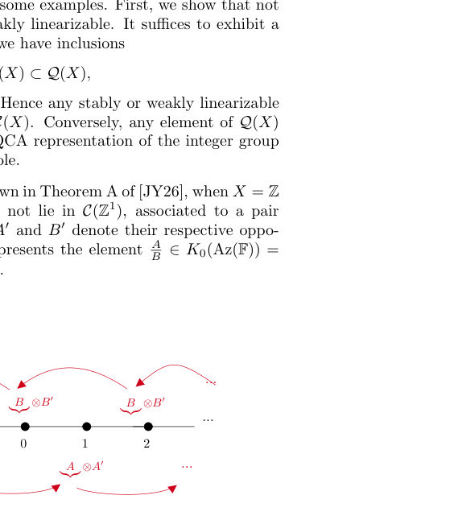
<figcaption class="paper-figure-caption"><b>Fig 1.</b> Figure 1. A QCA α for a pair (A, B) of central simple algebras. Here we place an alternating sequence of A ⊗A′ ∼= Mn(F) and B ⊗B′ ∼= Mm(F) on the metric space Z, and α simultaneously transports the tensor factor B to the left and the tensor factor A to the right.</figcaption>
</figure>
</div>
<p><strong>Summary.</strong> This paper develops an advanced obstruction theory using K-theory to determine when Quantum Cellular Automata (QCA) representations can be linearized into standard linear group actions. By analyzing universal obstruction classes derived from the homotopy type of QCA spaces, it establishes precise mathematical criteria for physical systems modeled by QCA to possess simple, linear dynamics.</p>
<p><strong>Why it may be interesting.</strong> This work provides a deep mathematical framework connecting quantum computation models (QCA) to fundamental algebraic topology invariants. The explicit calculation of obstruction classes over number fields suggests powerful, non-trivial constraints on physically realizable quantum dynamics.</p>
<details>
<summary>Detailed structure</summary>
<p><strong>Main problem.</strong> The central problem is developing an obstruction theory to determine when a Quantum Cellular Automata (QCA) representation, which models quantum spin systems with locality constraints, can be linearized into a standard linear group representation.</p>
<p><strong>Main result.</strong> The authors establish that the linearizability of QCA representations is governed by the vanishing of specific universal obstruction classes derived from algebraic K-theory spectra. They provide explicit conditions for this vanishing in various settings (e.g., finite groups, rational coefficients).</p>
<p><strong>Method.</strong> The methodology heavily employs advanced algebraic topology, specifically utilizing stable homotopy theory, K-theory spectra, and cohomology theories to construct and analyze obstruction cocycles.</p>
<p><strong>Model / system.</strong> The model is the QCA representation $\varphi: G 	o Q(X, q)$, where $G$ is a group acting on quantum spin systems defined over a metric space $X$. The locality constraints are encoded in the structure of the algebra of local observables $A(X, q)$.</p>
<p><strong>Key observables.</strong> Universal obstruction classes ($u_i(\varphi)$), stabilization maps ($\varphi_{st}$), and specific cohomology/homotopy groups (e.g., $  ext{H}^k(X; \mathbb{F}_p)$, $\pi_i(	ext{K}(C(X)))$).</p>
<p><strong>Important parameters / regimes.</strong> The field of coefficients ($\mathbb{F}$, $\mathbb{Q}$), the structure of the metric space $X$ (e.g., point, line, plane, lattice $\mathbb{Z}^d$), and the group $G$.</p>
<p><strong>Assumptions / limitations.</strong> The theory relies on establishing equivalences between different notions of linearizability (linearizable vs. stably linearizable) and assuming certain algebraic properties for the underlying spaces $X$ and groups $G$ (e.g., $G$ being rationally acyclic).</p>
<p><strong>Figures summary.</strong> Figures illustrate specific examples of QCA ($\alpha$) associated with central simple algebras or annular shifts on $\mathbb{Z}^2$, used to demonstrate non-circuit, non-linearizable cases.</p>
<p><strong>Paper structure.</strong> The paper builds from the single-particle case (Theorem 1.1) to generalizing the obstruction theory for QCA representations over arbitrary fields. It systematically defines various notions of linearizability and derives necessary and sufficient conditions using K-theoretic obstructions across different coefficient rings ($\mathbb{C}$, $\mathbb{R}$, finite fields).</p>
</details>
<details>
<summary>Abstract</summary>
<p>Projective representations arise naturally in physics and representation theory, and determining whether they can be linearized has been a fundamental problem. In this work, we study the analogous problem for quantum cellular automata (QCA) representations, which incorporate locality constraints imposed by a metric space $X$. Over an arbitrary field $\mathbb{F}$, we develop an obstruction theory for the linearization of QCA representations, using the algebraic $K$-theory spectrum of QCA constructed in previous work of the authors. The resulting obstructions are governed by the homotopy type of the QCA spaces, from which we extract universal obstruction classes to linearization. In the complex algebraic and unitary case, we also fully compute the homotopy types of the QCA spaces over a point, a line, and a plane.</p>
</details>
<p><sub><a href="#top">↑ back to top</a></sub></p>

<p><a id="paper-2606.20166"></a></p>
<h3 id="applications-of-quantum-annealing-to-magnetic-dipole-hyperfine-structure-constants-first-results-beyond-energies-for-atoms"><a href="http://arxiv.org/abs/2606.20166v1">Applications of quantum annealing to magnetic dipole hyperfine structure constants: First results beyond energies for atoms</a></h3>
<p><strong>Authors:</strong> Boni Paul, Subimal Deb, Per Jönsson, Jörgen Ekman, Bhanu Pratap Das<br>
<strong>Type:</strong> theory · <strong>Category:</strong> quantum information and computing · <strong>PDF:</strong> <a href="https://arxiv.org/pdf/2606.20166v1">https://arxiv.org/pdf/2606.20166v1</a><br>
<strong>Analysis basis:</strong> full PDF text, analyzed in chunks</p>
<div class="figure-strip-hint">↔ Scroll figures horizontally</div>
<div class="paper-figures-scroll">
<figure class="paper-figure-card">
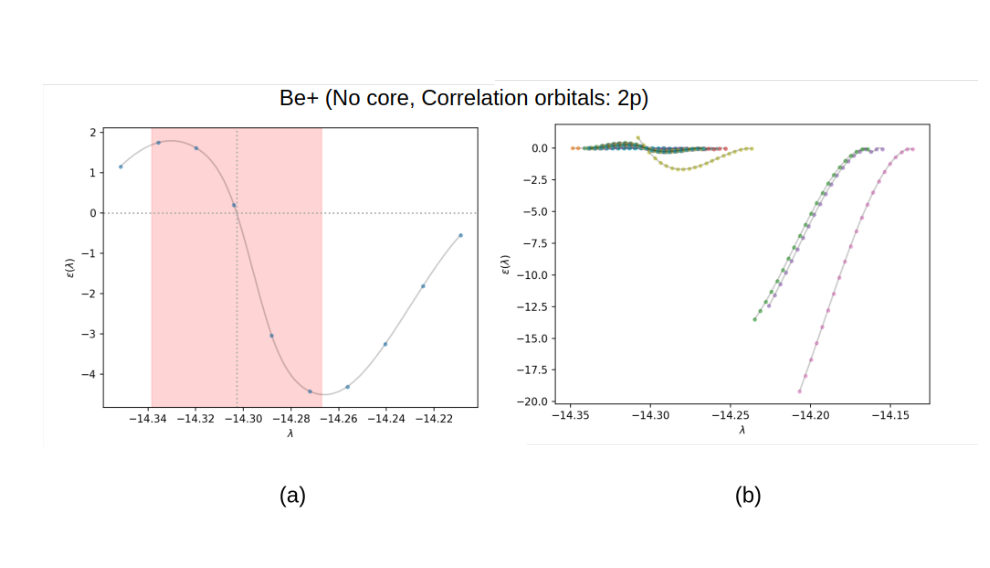
<figcaption class="paper-figure-caption"><b>Fig 1.</b> FIG. 1. (a) The initial guess for λ is obtained by a coarse scan of ϵ(λ) around H11 yielding the gray curve. The shaded pink region serves as the next narrowed down window, centered at the interpolated root of the functional, for the next iteration. (b) The subsequent scans over the narrower windows of λ yield improved guesses for the Lagrange parameter.</figcaption>
</figure>
<figure class="paper-figure-card">
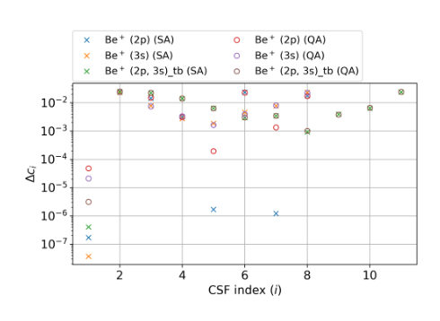
<figcaption class="paper-figure-caption"><b>Fig 2.</b> FIG. 2. The absolute error in coefficients computed by SA and QA with respect to GRASP for Be+ for the cases listed in Table II. The list of active orbitals are in the parenthesis following the element name. tb in the legends refer to a trun- cated basis.</figcaption>
</figure>
<figure class="paper-figure-card">
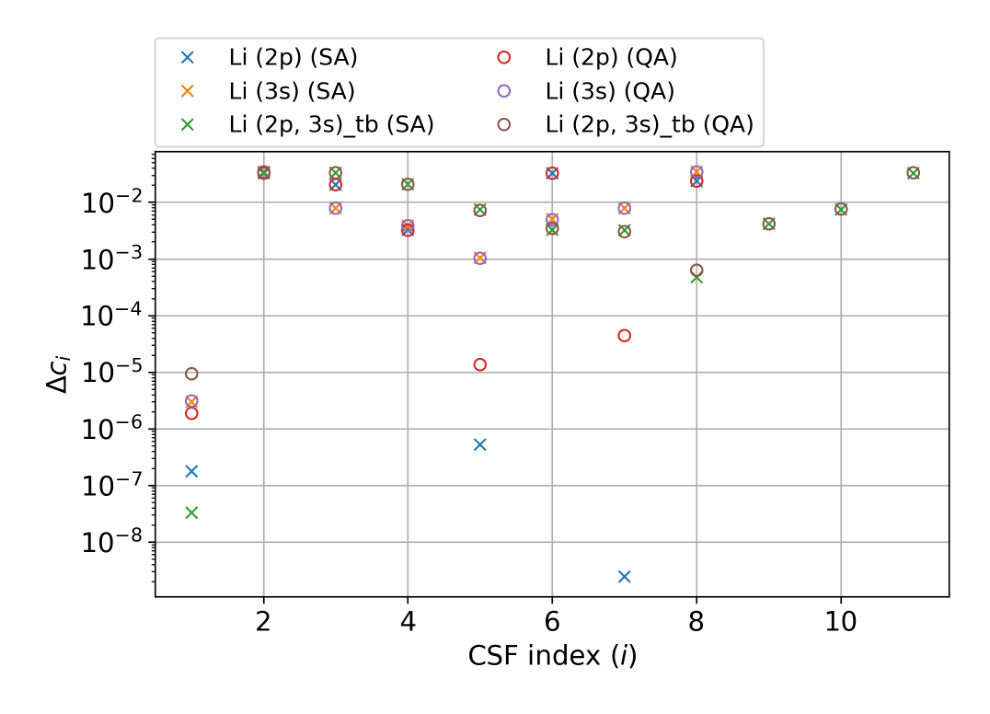
<figcaption class="paper-figure-caption"><b>Fig 3.</b> FIG. 1: The absolute error in coefficients computed by SA and QA with respect to GRASP for Li for the cases listed in Table I in the main manuscript. The list of active orbitals are in the parenthesis following the element name. tb in the legends refer to a truncated basis.</figcaption>
</figure>
<figure class="paper-figure-card">
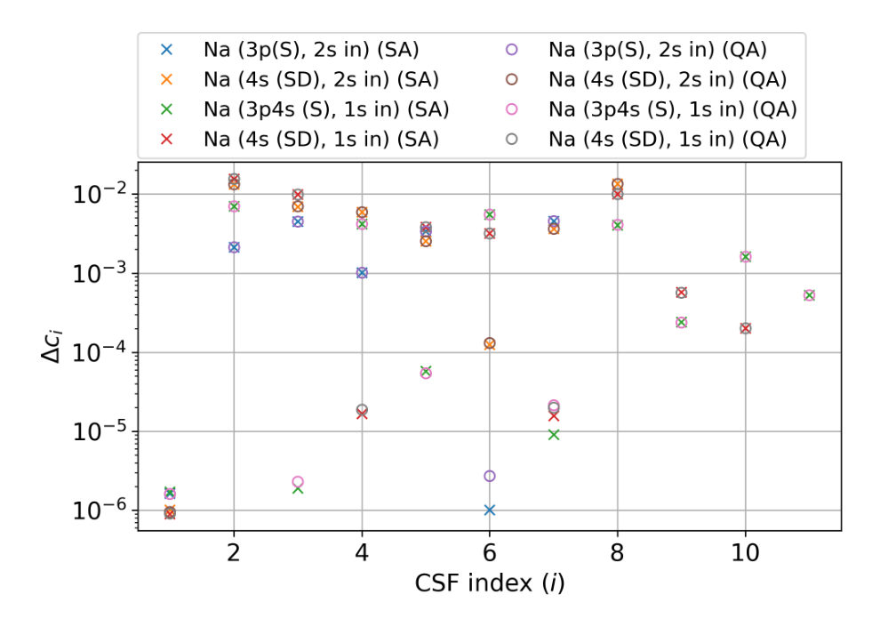
<figcaption class="paper-figure-caption"><b>Fig 4.</b> FIG. 2: The absolute error in coefficients computed by SA and QA with respect to GRASP for Na for the cases listed in Table III in the main manuscript. S and SD refer to single and double excitations. in in the legend refers to inactive orbitals. The other legends are identical to Fig. 1.</figcaption>
</figure>
<figure class="paper-figure-card">
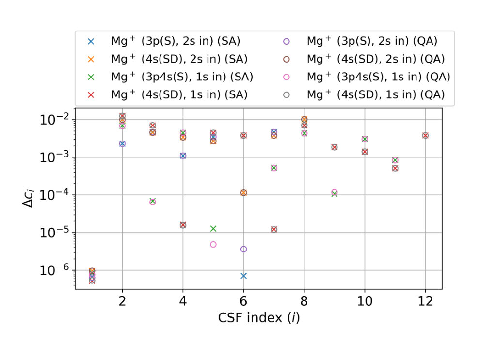
<figcaption class="paper-figure-caption"><b>Fig 5.</b> FIG. 3: The absolute error in coefficients computed by SA and QA with respect to GRASP for Mg+ for the cases listed in Table IV in the main manuscript. The legends are identical to Fig. 1.</figcaption>
</figure>
</div>
<p><strong>Summary.</strong> The authors successfully applied a modified Quantum Annealer Eigensolver (QAE) algorithm on D-Wave hardware to calculate magnetic dipole hyperfine structure constants for several light atoms. By benchmarking these results against high-level classical calculations (GRASP), they demonstrated that quantum annealing can accurately determine complex atomic properties, marking an extension of the technique beyond ground-state energy determination.</p>
<p><strong>Why it may be interesting.</strong> This work directly tests the capability of quantum annealers to solve complex, physically relevant many-body problems beyond simple energy minimization, providing a crucial benchmark for quantum simulation in atomic physics.</p>
<details>
<summary>Detailed structure</summary>
<p><strong>Main problem.</strong> The primary goal is to calculate magnetic dipole hyperfine structure (HFS) constants for several light atoms using quantum annealing techniques, extending the application of these methods beyond simple ground-state energy calculations.</p>
<p><strong>Main result.</strong> Quantum hardware demonstrations yielded HFS constant results completely consistent with established classical relativistic atomic structure calculations (GRASP) at the specified precision.</p>
<p><strong>Method.</strong> The problem is mapped onto a QUBO formulation suitable for quantum annealing, utilizing a modified Quantum Annealer Eigensolver (QAE) approach combined with a zooming-and-sigma-annealing technique.</p>
<p><strong>Model / system.</strong> The calculations focus on neutral and alkali-like atoms ($  ext{Li},    ext{Be},    ext{Na},    ext{Mg}$) using the relativistic Dirac-Coulomb Hamiltonian. The methodology involves constructing matrix elements from Configuration State Functions (CSFs).</p>
<p><strong>Key observables.</strong> Magnetic dipole HFS constants ($A$) and ground-state eigenvalues/eigenvectors of the $    ext{HDC}$ matrix.</p>
<p><strong>Important parameters / regimes.</strong> The QAE precision is limited to three decimal places, corresponding to up to 10 qubits; hardware constraints limit the number of CSFs used (e.g., $B=11$).</p>
<p><strong>Assumptions / limitations.</strong> A CSF truncation scheme is employed for larger basis sets, estimating contributions based on approximations derived from the independent electron pair model.</p>
<p><strong>Figures summary.</strong> Figures illustrate the iterative 'zooming' process used to improve eigenvalue precision during quantum annealing simulations.</p>
<p><strong>Paper structure.</strong> The paper systematically presents comparisons of calculated CSF coefficients and HFS constants across multiple atomic species ($   ext{Li},    ext{Be}^+,  ext{Na},    ext{Mg}^+$) using three methods: GRASP (reference), Simulated Annealing (SA), and Quantum Annealing (QA).</p>
</details>
<details>
<summary>Abstract</summary>
<p>We report the first results of the magnetic dipole hyperfine structure (HFS) constants of neutral $\mathrm{Li}$, Li-like $\mathrm{Be}$, neutral $\mathrm{Na}$, and Na-like $\mathrm{Mg}$ using a modified version of the Quantum Annealer Eigensolver (QAE) algorithm on D-Wave's quantum hardware. The results are benchmarked against relativistic configuration interaction with multiconfiguration Dirac Hartree-Fock (MCDHF) calculations using the General-purpose Relativistic Atomic Structure Package (GRASP), and simulated annealing. In our modified QAE, a zooming-and-sigma-annealing approach with a floating-point encoding scheme is adopted to estimate the ground-state eigenvalue and eigenvector of the relativistic Dirac-Coulomb Hamiltonian matrices ($H_{\mathrm{DC}}$) constructed from 11 or fewer configuration state functions (CSFs). For calculations with extended correlation orbital sets, we applied a CSF truncation scheme, retaining only CSFs (up to 12) that make significant contributions to the ground-state wavefunction. Our modified QAE precision is kept limited to three decimal places (up to 10 qubits). Hardware demonstrations on the D-Wave quantum processing unit (QPU) yielded results that were completely consistent with GRASP (at the chosen precision) in determining the magnetic dipole HFS constants, with accuracy varying across systems and $H_{\mathrm{DC}}$ matrix dimensions.</p>
</details>
<p><sub><a href="#top">↑ back to top</a></sub></p>

<p><a id="paper-2606.20316"></a></p>
<h3 id="exploiting-more-than-symmetry-in-variational-quantum-machine-learning"><a href="http://arxiv.org/abs/2606.20316v1">Exploiting More Than Symmetry in Variational Quantum Machine Learning</a></h3>
<p><strong>Authors:</strong> Markus Baumann, Claudia Linnhoff-Popien<br>
<strong>Type:</strong> theory · <strong>Category:</strong> quantum information and computing · <strong>PDF:</strong> <a href="https://arxiv.org/pdf/2606.20316v1">https://arxiv.org/pdf/2606.20316v1</a><br>
<strong>Analysis basis:</strong> full PDF text, analyzed in chunks</p>
<div class="figure-strip-hint">↔ Scroll figures horizontally</div>
<div class="paper-figures-scroll">
<figure class="paper-figure-card">
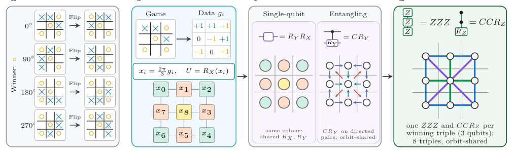
<figcaption class="paper-figure-caption"><b>Fig 1.</b> Fig. 1. From task symmetry to a task-aligned equivariant circuit. (a) Tic-Tac-Toe labels are invariant under the D4 rotations and reflections of the board. (b) Board entries gi ∈{−1, 0, +1} are encoded as RX(xi) rotations with xi = 2π</figcaption>
</figure>
<figure class="paper-figure-card">
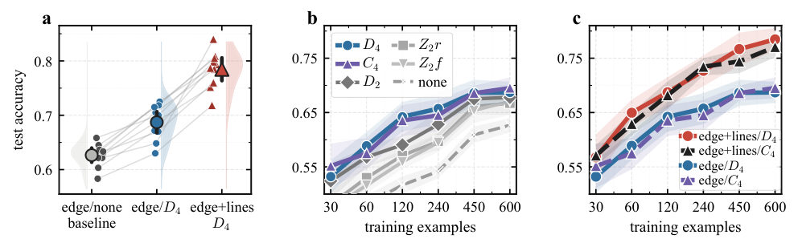
<figcaption class="paper-figure-caption"><b>Fig 2.</b> Fig. 2. Main empirical evidence. (a) Full D4 equivariance improves the original edge ansatz over no sharing. (b) The subgroup sweep across training sizes shows that C4 tracks D4 closely. (c) Adding winning-line interactions to the equivariant edge ansatz improves test accuracy while preserving the imposed symmetry.</figcaption>
</figure>
<figure class="paper-figure-card">
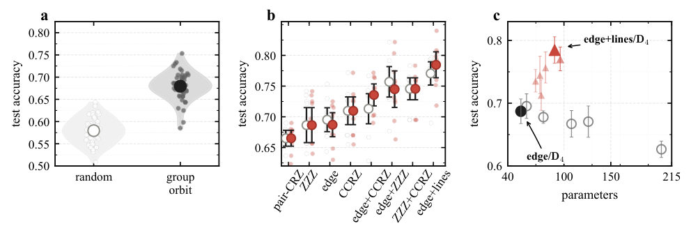
<figcaption class="paper-figure-caption"><b>Fig 3.</b> Fig. 3. Controls and ablations. (a) Parameter-matched random sharing underperforms group-orbit sharing. (b) Ablations are anchored by the labelled edge/D4 ansatz; the strongest model combines edge interactions with both line channels. (c) Accuracy is not explained by parameter count alone.</figcaption>
</figure>
</div>
<p><strong>Summary.</strong> The paper investigates how to optimally constrain Variational Quantum Circuits by leveraging problem symmetries in VQML. By testing on Tic-Tac-Toe, the authors find that while symmetry defines a necessary admissible space, achieving peak performance requires supplementing this constraint with trainable interactions directly targeting known, critical features of the task.</p>
<p><strong>Why it may be interesting.</strong> This work provides a concrete framework for incorporating domain knowledge (symmetry) into quantum circuit design, which is crucial for building practical, resource-efficient quantum algorithms beyond simple pattern matching.</p>
<details>
<summary>Detailed structure</summary>
<p><strong>Main problem.</strong> The core challenge is designing Variational Quantum Machine Learning (VQML) models that are not just expressive, but optimally constrained by the underlying symmetries of the problem to improve generalization.</p>
<p><strong>Main result.</strong> While enforcing symmetry provides a significant benefit over unconstrained models, the largest performance gains come from adding trainable interactions specifically tailored to known, decisive task motifs, suggesting task knowledge guides effective ansatz design within the admissible symmetric space.</p>
<p><strong>Method.</strong> The authors compare different parameter sharing strategies (varying subgroup constraints) and test the impact of adding specific, symmetry-respecting gates (winning-line gates) on a fully enumerable quantum game model.</p>
<p><strong>Model / system.</strong> The study uses Variational Quantum Circuits (VQC) applied to the game Tic-Tac-Toe. The input data is encoded using $RX$ rotations, and symmetries are enforced by restricting trainable parameters via parameter sharing based on subgroups of the dihedral group $D_4$.</p>
<p><strong>Key observables.</strong> Test accuracy (the primary metric), generalization gap (difference between training and test error), and the number of trainable parameters.</p>
<p><strong>Important parameters / regimes.</strong> The imposed symmetry subgroup ($H \subseteq D_4$), the specific interactions added (e.g., ZZZ or CCRZ gates on winning triples), and optimization hyperparameters like learning rate and epochs.</p>
<p><strong>Assumptions / limitations.</strong> The study relies on Tic-Tac-Toe being a fully enumerable and structurally transparent test case, allowing for precise identification of task-relevant motifs.</p>
<p><strong>Figures summary.</strong> Figure 2 demonstrates that enforcing $D_4$ symmetry improves accuracy over no constraint, and further shows that adding trainable gates corresponding to winning lines provides the largest boost in performance. Figure 3 compares random vs. orbit-based sharing and confirms that parameter count alone does not explain all gains.</p>
<p><strong>Paper structure.</strong> The paper establishes the need for structure-aware VQML models by first showing how symmetry constrains the design space. It then systematically investigates two axes of freedom: varying the strength of symmetry enforcement, and adding task-specific interactions on top of the base symmetric ansatz.</p>
</details>
<details>
<summary>Abstract</summary>
<p>The success of variational quantum learning models crucially depends on choosing parametrizations that reflect the structure of the problem at hand. Symmetries provide one of the clearest such structures: whenever transformations of the input leave the desired outcome unchanged, this invariance should be built into the model rather than discovered during training. However, imposing a symmetry does not by itself determine a useful ansatz. Even within the symmetry-preserving space, one must decide where the trainable degrees of freedom should be placed. In this work, we study this remaining design freedom in equivariant variational quantum circuits. Building on symmetry-based parameter sharing, we disentangle two architectural choices: how much symmetry should be enforced, and which symmetry-respecting interactions should be trainable. Using Tic-Tac-Toe as a fully enumerable and structurally transparent test case, we find that suitable subgroups preserve most of the generalization benefit. By contrast, the dominant gains arise from gates acting directly on decisive task motifs. Thus, symmetry defines the admissible design space, while effective ansatze require an additional task-informed choice of trainable interactions.</p>
</details>
<p><sub><a href="#top">↑ back to top</a></sub></p>

<p><a id="paper-2606.20476"></a></p>
<h3 id="impossibility-of-superluminal-signalling-rules-out-causal-loops-in-conical-spacetimes"><a href="http://arxiv.org/abs/2606.20476v1">Impossibility of superluminal signalling rules out causal loops in conical spacetimes</a></h3>
<p><strong>Authors:</strong> Maarten Grothus, V. Vilasini<br>
<strong>Type:</strong> theory · <strong>Category:</strong> other · <strong>PDF:</strong> <a href="https://arxiv.org/pdf/2606.20476v1">https://arxiv.org/pdf/2606.20476v1</a><br>
<strong>Analysis basis:</strong> full PDF text, analyzed in chunks</p>
<div class="figure-strip-hint">↔ Scroll figures horizontally</div>
<div class="paper-figures-scroll">
<figure class="paper-figure-card">
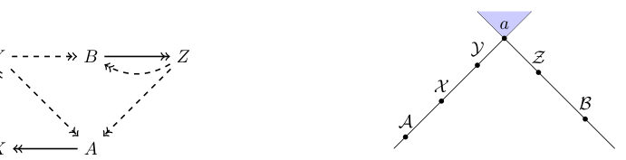
<figcaption class="paper-figure-caption"><b>Fig 1.</b> Figure 1: Let X, Y, Z, A, B ∈S. Consider X ⊨Y, Y ⊨AB, A ⊨X, Z ⊨AB, B ⊨Z. (a) No matter the underlying causal model, the affects relations allow to infer that a causal loop will always be present. Here, ↠denotes causal relations between two RVs, while its dashed version stands for alternative causal relations, e.g. Y ↠AB being equivalent to (Y ↠A or Y ↠B), so at least one of the dashed arrows from Y must be present as a causal relation. (b) A compatible, non-degenerate embedding of these affects relations into (1 + 1)-Minkowski spacetime, where all ORVs need be located on certain light-like surfaces.</figcaption>
</figure>
<figure class="paper-figure-card">
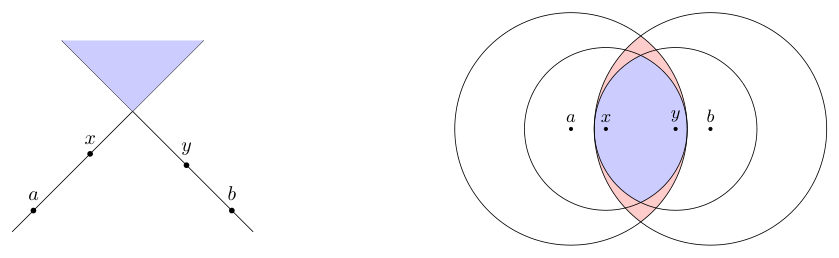
<figcaption class="paper-figure-caption"><b>Fig 2.</b> Figure 2: Representation of light cones in Minkowski spacetime for d spatial dimensions. (a) For d = 1 Minkowski spacetime does not show conicality. This is because L1 := {a, b} and L2 := {x, y} are distinct, yet share the same joint future. (b) For d = 2, Minkowski spacetime is conical. As can be seen from the figure which shows one particular time slice, the joint futures are distinct between L1 and L2 (and the red region is thus not covered by the blue one).</figcaption>
</figure>
</div>
<p><strong>Summary.</strong> This theoretical paper investigates the relationship between superluminal signaling constraints (NSS) and causal loops in spacetime. By introducing the concept of 'conicality,' the authors prove that this geometric property forces any compatible causal structure to be non-looping, thereby establishing a deep link between local causality principles and global spacetime geometry.</p>
<p><strong>Why it may be interesting.</strong> While not directly related to quantum many-body physics, the rigorous mathematical framework for causality and information flow across curved spacetimes is foundational for theories involving quantum gravity or relativistic quantum field theory.</p>
<details>
<summary>Detailed structure</summary>
<p><strong>Main problem.</strong> The central problem is determining whether the principle of No Superluminal Signalling (NSS) inherently rules out all operationally detectable causal loops in spacetimes that possess a 'conical' geometric structure.</p>
<p><strong>Main result.</strong> The authors prove a general no-go result: in any conical spacetime, NSS rules out all operationally verifiable causal loops, establishing that this relationship depends fundamentally on the geometry of spacetime.</p>
<p><strong>Method.</strong> The analysis uses an advanced framework combining causal inference (affects relations) with geometric constraints derived from poset theory, specifically leveraging the concept of 'conicality' in the spacetime embedding.</p>
<p><strong>Model / system.</strong> The model involves describing causality using directed graphs and affects relations, which are then embedded into a partially ordered set (poset) representing the spacetime light cone structure. The focus is on 'conical' spacetimes, including $d>1$ Minkowski space.</p>
<p><strong>Key observables.</strong> Operationally detectable causal loops (ACLs), compatibility conditions derived from affects relations ($   ext{X} \models  ext{Y} |    ext{do}(    ext{Z})$), and the geometric property of conicality.</p>
<p><strong>Important parameters / regimes.</strong> The spatial dimension $d$ (comparing $d=1$ vs. $d>1$), and the irreducibility conditions ($  ext{Irred1},    ext{Irred3}$) applied to affects relations.</p>
<p><strong>Assumptions / limitations.</strong> The entire proof structure relies heavily on assuming a conical embedding of the causal model into spacetime, as this geometric property is key to deriving contradictions that rule out loops.</p>
<p><strong>Figures summary.</strong> Figure 1 illustrates complex examples of ACLs in $(1+1)$-Minkowski space. Figure 2 compares light cone representations for $d=1$ (non-conical) versus $d>1$ (conical), showing how joint futures differ.</p>
<p><strong>Paper structure.</strong> The paper develops the framework by first defining affects relations and conical embeddings, then proving necessary lemmas that simplify higher-order conditional affects relations ($ ext{Lemma A.7}$). Finally, it applies these results to prove that any compatible embedding of ACLs in a conical spacetime must be degenerate (Theorem A.9).</p>
</details>
<details>
<summary>Abstract</summary>
<p>In PRL 129, 110401 it was shown that it is theoretically possible to have operationally detectable causal loops without violating the principle of no superluminal signalling (NSS) in (1+1)-Minkowski spacetime. Whether or not such causal loops are also possible in $d > 1$ spatial dimensions, has remained a key open question. We resolve this question by showing that in a wide class of "conical" spacetimes, including Minkowski with d &gt; 1, NSS does rule out all operationally detectable causal loops, in classical, quantum and post-quantum theories. This establishes that the relationship between the relativistic principles of NSS and no causal loops depends inherently on the geometry of spacetime.</p>
</details>
<p><sub><a href="#top">↑ back to top</a></sub></p>

<p><a id="paper-2606.20168"></a></p>
<h3 id="norms-overlaps-and-yangian-descendants-for-the-haldane-shastry-spin-chain"><a href="http://arxiv.org/abs/2606.20168v1">Norms, overlaps and Yangian descendants for the Haldane--Shastry spin chain</a></h3>
<p><strong>Authors:</strong> Yunfeng Jiang, Jules Lamers, Yuan Miao<br>
<strong>Type:</strong> theory · <strong>Category:</strong> statistical mechanics · <strong>PDF:</strong> <a href="https://arxiv.org/pdf/2606.20168v1">https://arxiv.org/pdf/2606.20168v1</a><br>
<strong>Analysis basis:</strong> full PDF text, analyzed in chunks</p>
<div class="figure-strip-hint">↔ Scroll figures horizontally</div>
<div class="paper-figures-scroll">
<figure class="paper-figure-card">
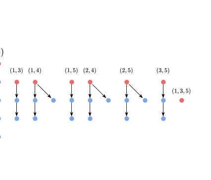
<figcaption class="paper-figure-caption"><b>Fig 1.</b> Figure 1: Schematic picture of the structure of the Hilbert space of the HS chain with N = 6, with Yangian multiplets labelled by their motif (top) and total momentum (bottom), cf. [31, Fig. 1]. The red dots denote the yhw states, labelled by motifs, while the blue dots represent the descendant states. The vertically aligned states belong to the same sl2 multiplets. The transfer matrix only preserves this structure in the periodic case (twist κ = 1).</figcaption>
</figure>
<figure class="paper-figure-card">
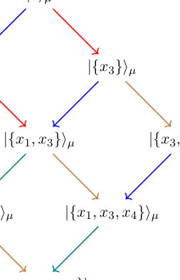
<figcaption class="paper-figure-caption"><b>Fig 2.</b> Figure 2: Hasse diagram showing the descendant structure for the Yangian mul- tiplet for the motif µ = (3) at N = 6 in the Gelfand–Tsetlin limit κ →∞. Different colours represent the action of B-operators with different arguments, with x1 = −7</figcaption>
</figure>
</div>
<p><strong>Summary.</strong> The paper tackles the complex problem of characterizing all eigenstates, not just the highest-weight states, within the Yangian symmetry framework of the Haldane–Shastry spin chain. By developing systematic methods using algebraic Bethe ansatz and determinant formulas, it provides explicit formulae for the norms and overlaps of these descendant states. This advances the theoretical understanding of integrable quantum many-body systems with long-range interactions.</p>
<p><strong>Why it may be interesting.</strong> This work provides deep spectral information about an integrable quantum many-body system whose structure is governed by infinite symmetries (Yangian), which is crucial for understanding non-equilibrium dynamics in 1D quantum systems.</p>
<details>
<summary>Detailed structure</summary>
<p><strong>Main problem.</strong> The primary goal is to systematically construct an orthogonal eigenbasis for the Yangian descendant states of the Haldane–Shastry (HS) spin chain and compute their norms and overlaps.</p>
<p><strong>Main result.</strong> Product and determinant formulae are derived for the norms and overlaps of these descendant states, establishing a complete understanding of the spectral structure beyond the highest-weight states.</p>
<p><strong>Method.</strong> The analysis employs advanced techniques from the Algebraic Bethe Ansatz (ABA), leveraging connections to spin-Calogero–Sutherland systems and utilizing Jack polynomials and determinant formulas (Gaudin/Slavnov).</p>
<p><strong>Model / system.</strong> The system is the Haldane–Shastry (HS) spin chain, an integrable model with long-range interactions, which serves as a discrete analogue of a conformal field theory. Its integrability is governed by full Yangian symmetry.</p>
<p><strong>Key observables.</strong> Norms and overlaps of descendant states ($\langle u|u
angle$, $\langle v|u
angle$), energy spectrum $E(\mu)$, and the structure of Yangian multiplets labeled by motifs $\mu$.</p>
<p><strong>Important parameters / regimes.</strong> The twist parameter $\kappa$ (analyzed in limits like $\kappa=1$ for $\mathfrak{sl}_2$ symmetry, and $\kappa 	o \infty$ for the Gelfand–Tsetlin basis).</p>
<p><strong>Assumptions / limitations.</strong> The derivation relies on the completeness of the ABA framework and specific mathematical identities related to Jack polynomials.</p>
<p><strong>Figures summary.</strong> Figures illustrate the structure of Yangian multiplets, showing descendant towers in both the extreme twist (GT) limit and the periodic ($\kappa=1$) limit, analogous to known spin chain structures.</p>
<p><strong>Paper structure.</strong> The paper reviews existing knowledge on HS symmetry, details the connection to spin-CS systems via freezing limits, constructs the descendant states using ABA techniques, and concludes by deriving explicit formulas for norms and overlaps.</p>
</details>
<details>
<summary>Abstract</summary>
<p>The Haldane-Shastry spin chain is a prototypical integrable model with long-range interactions, notable for hosting quasiparticles with fractional statistics and serving as a discrete analogue of a conformal field theory. Its remarkable simplicity is closely tied to a full Yangian spin symmetry. While the highest-weight states for this symmetry are known explicitly, a systematic treatment of the descendant states, needed for the computation of various physical quantities, has remained incomplete. In this work, we provide a detailed construction of these descendants in terms of the algebraic Bethe ansatz following recent work of Ferrando et al. In the limit of extreme twist, it includes the Gelfand-Tsetlin basis. As an application, we derive product and determinant formulae for norms and overlaps of these states.</p>
</details>
<p><sub><a href="#top">↑ back to top</a></sub></p>

<p><a id="paper-2606.20184"></a></p>
<h3 id="operator-learning-for-efficient-quantum-computation"><a href="http://arxiv.org/abs/2606.20184v1">Operator Learning for efficient Quantum Computation</a></h3>
<p><strong>Authors:</strong> Paul Over, Sergio Bengoechea, Leonardo Borello Busilacchi, Martin Kiffner, Thomas Rung, Alexios A. Michailidis<br>
<strong>Type:</strong> theory · <strong>Category:</strong> quantum information and computing · <strong>PDF:</strong> <a href="https://arxiv.org/pdf/2606.20184v1">https://arxiv.org/pdf/2606.20184v1</a><br>
<strong>Analysis basis:</strong> full PDF text, analyzed in chunks</p>
<div class="figure-strip-hint">↔ Scroll figures horizontally</div>
<div class="paper-figures-scroll">
<figure class="paper-figure-card">
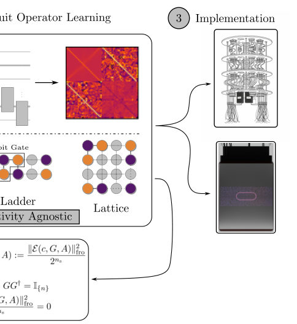
<figcaption class="paper-figure-caption"><b>Fig 1.</b> FIG. 1: Illustration of the entire quantum operator learning approach.</figcaption>
</figure>
<figure class="paper-figure-card">
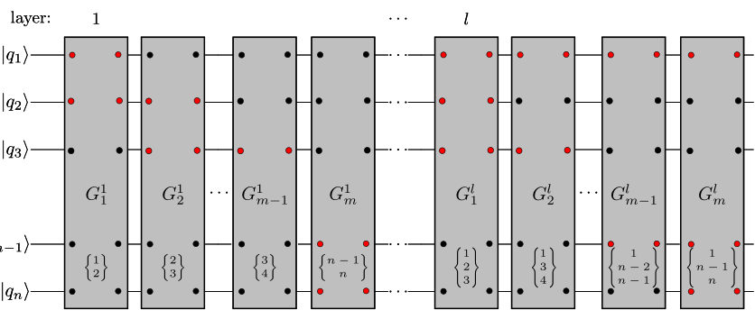
<figcaption class="paper-figure-caption"><b>Fig 2.</b> FIG. 2: Illustration of an l-layer trainable quantum circuit ansatz G. For each gate, the subset of qubits on which it acts non-trivially, denoted by Gj i , is indicated by the red vertices, or equivalently by its connectivity list. A one-dimensional hardware architecture is assumed for illustration purposes. The first layer is composed of n −1 nearest-neighbor two-qubit gates, whereas the l-th layer is composed of n −2 long-range three-qubit gates.</figcaption>
</figure>
<figure class="paper-figure-card">
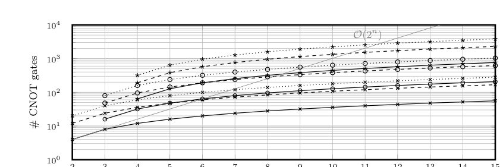
<figcaption class="paper-figure-caption"><b>Fig 3.</b> FIG. 3: Gate complexity over number of qubits for layers l = {1 (solid) , 3 (dashed) , 5 (dotted)} (line-type) and gate sizes r = {2 (×), 3 (◦), 4 (⋆)} (symbol).</figcaption>
</figure>
<figure class="paper-figure-card">
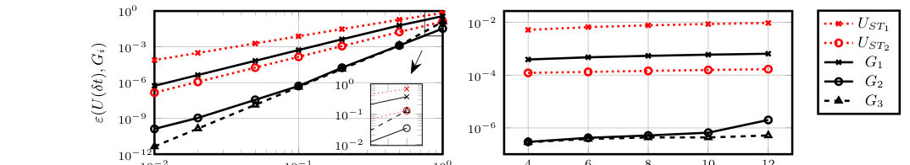
<figcaption class="paper-figure-caption"><b>Fig 4.</b> FIG. 4: Application of the learning algorithm to multiple quantum many-body scenarios and comparison against commonly used Trotter decompositions in terms of timestep δt with constant system size n = 8 (a), system size n with constant timestep δt = 0.1 (b), and relative error ε. Same symbols denote identical quantum resources.</figcaption>
</figure>
<figure class="paper-figure-card">
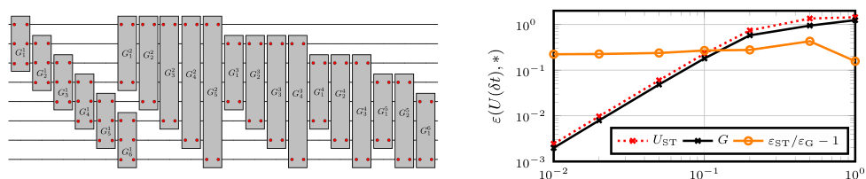
<figcaption class="paper-figure-caption"><b>Fig 5.</b> FIG. 5: (a) Quantum circuit implementation of the butadiene PPP Hamiltonian, consisting of 21 nearest-neighbor and long-range interaction gates. (b) Time-step-induced errors as a function of the time-step size for the ST and learned-circuit propagators.</figcaption>
</figure>
</div>
<p><strong>Summary.</strong> This work proposes a comprehensive variational framework to compile arbitrary classical operators—from those governing quantum dynamics to those from fluid mechanics—into compact quantum circuits. By using backpropagation and block encoding, it overcomes the limitations of standard Trotterization and tensor network methods. This universal approach establishes a powerful programming layer for realizing complex physical simulations on near-term quantum hardware.</p>
<p><strong>Why it may be interesting.</strong> It provides a universal, hardware-agnostic compilation layer that bridges continuous mathematical models (PDEs, flow) directly into discrete quantum gate sequences, which is crucial for near-term quantum advantage demonstrations.</p>
<details>
<summary>Detailed structure</summary>
<p><strong>Main problem.</strong> Efficient quantum algorithm implementation is limited by the lack of efficient primitives for arbitrary operators and state preparation.</p>
<p><strong>Main result.</strong> The framework successfully learns compact quantum circuits to approximate complex, general-purpose operators with improved resource scaling over standard Trotter expansions.</p>
<p><strong>Method.</strong> A full-stack variational approach uses backpropagation and a cost function to transform arbitrary operators (unitary or non-unitary) into trainable quantum circuits via block encoding.</p>
<p><strong>Model / system.</strong> The framework is tested across diverse domains: simulating time evolution in quantum chemistry, solving PDEs using the Laplace operator, and modeling potential flow around an airfoil.</p>
<p><strong>Key observables.</strong> Relative error ($\epsilon$), success probability ($p$), objective function value ($J$), and resource scaling (circuit depth/qubits).</p>
<p><strong>Important parameters / regimes.</strong> Time step ($\delta t$), system size ($n$ or $n_s$), regularization strength ($
ho$), and ancilla qubit count ($n_a$).</p>
<p><strong>Assumptions / limitations.</strong> The method assumes the target operator can be approximated by a quantum circuit ansatz, and it utilizes techniques like SVD projection to enforce constraints.</p>
<p><strong>Figures summary.</strong> Figures illustrate the overall pipeline (discretization $
ightarrow$ encoding $
ightarrow$ hardware), compare error scaling against ST methods for time evolution, and show optimization strategy comparisons for PDEs and fluid dynamics.</p>
<p><strong>Paper structure.</strong> The paper introduces the problem, details the block-encoding methodology for non-unitary operators, presents the hierarchical optimization protocol using automatic differentiation and SVD projection, and validates this approach across quantum simulation, PDE solving, and classical fluid mechanics problems.</p>
</details>
<details>
<summary>Abstract</summary>
<p>An efficient implementation of quantum algorithms is often hindered by the lack of efficient primitives for operators and state preparation. This limits both the ability of near-term quantum hardware to simulate complex problems and the potential of fault-tolerant algorithms to achieve practical quantum advantage. To address this, we propose a full-stack variational framework that transforms arbitrary operators to compact quantum circuits. The resulting variational circuits can be tailored to the connectivity and long-range interaction of the target hardware. The learning process employs backpropagation together with a cost function that efficiently optimizes unitary operators and non-unitary -- dense or sparse -- operators using only a single ancilla qubit for block encoding. Additionally, we introduce a regularization term that reduces the approximation error. The approach is validated for both quantum mechanical and engineering applications. In the former case, we learn propagators that arise in native quantum problems -- such as quantum simulation and quantum chemistry -- and achieve improved resource scaling in comparison to standard Suzuki-Trotter expansions. In the latter case, we demonstrate the approach's ability to implement the second-order central finite difference approximation of the Laplace operator -- relevant for solving partial differential equations -- while improving upon current error metrics. The final example deals with learning a dense, non-unitary operator that arises in the analysis of inviscid potential flow around an airfoil. This universality of the framework opens the door for solving general problems beyond prototypical engineering and quantum applications.</p>
</details>
<p><sub><a href="#top">↑ back to top</a></sub></p>

<p><a id="paper-2606.20176"></a></p>
<h3 id="quantum-accelerated-self-consistent-field-a-hybrid-algorithm"><a href="http://arxiv.org/abs/2606.20176v1">Quantum-Accelerated Self-Consistent Field: A Hybrid Algorithm</a></h3>
<p><strong>Authors:</strong> Alexis Ralli, Tim Weaving, Thomas M. Bickley, Peter V. Coveney, Peter J. Love<br>
<strong>Type:</strong> theory · <strong>Category:</strong> quantum information and computing · <strong>PDF:</strong> <a href="https://arxiv.org/pdf/2606.20176v1">https://arxiv.org/pdf/2606.20176v1</a><br>
<strong>Analysis basis:</strong> full PDF text, analyzed in chunks</p>
<div class="figure-strip-hint">↔ Scroll figures horizontally</div>
<div class="paper-figures-scroll">
<figure class="paper-figure-card">
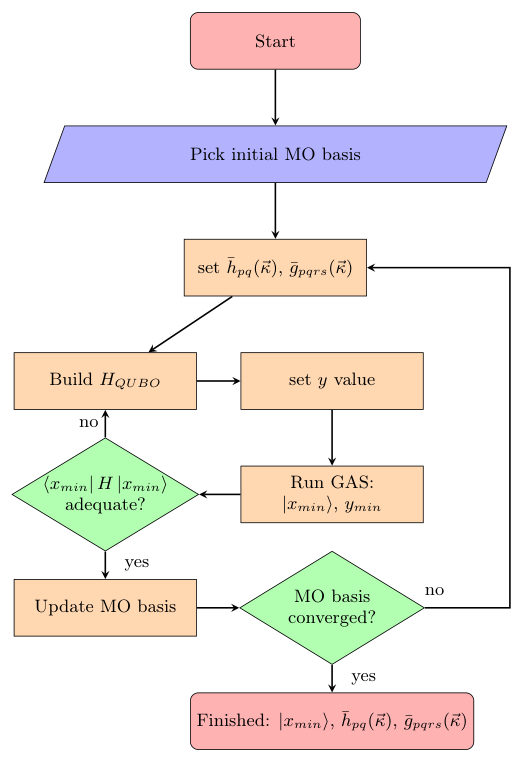
<figcaption class="paper-figure-caption"><b>Fig 1.</b> FIG. 1: Full outline of GAS-SCF algorithm (equation 3). Refer to Algorithms 1 and 2 in [20] for the procedure to update the MO basis. The initial MO basis may be set to any standard choice, such as Löwdin or canonical or similar. Here, “adequate&quot; refers to an energy that has converged, outperforms classical SCF solutions, or satisfies a predefined (possibly spectral-based) threshold for advancing the algorithm to the MO basis optimization stage.</figcaption>
</figure>
<figure class="paper-figure-card">
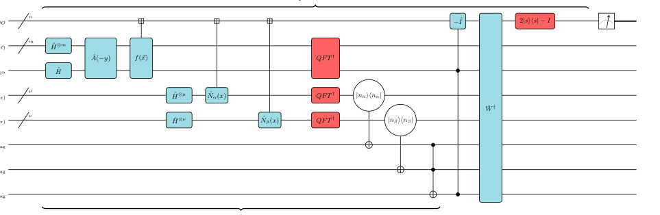
<figcaption class="paper-figure-caption"><b>Fig 2.</b> FIG. 2: Outline of the full quantum circuit to implement the Grover Adaptive Search Self-Consistent Field (GAS-SCF) algorithm. Here the search space is over the uniform superposition of computational states: |s⟩= H⊗n |0⟩⊗n. Figure 3 provides an alternate construction, where the state on the first n-qubit register is different. The ˆA and f(⃗x) gates are defined in Figure S.1 and Figure S.5 in the supporting information. The former encodes the negative reference value (−y) setting a threshold, while the latter encodes the cost function for different binary states in the QUBO register state, as observed by the controls. The gates defined with clear circular controls, with projectors inside...</figcaption>
</figure>
<figure class="paper-figure-card">
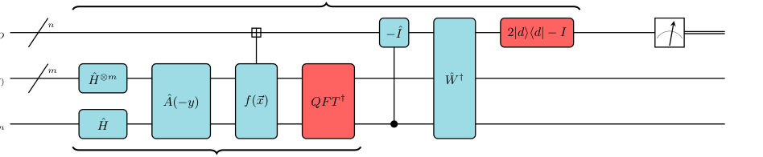
<figcaption class="paper-figure-caption"><b>Fig 3.</b> FIG. 3: Outline of the full quantum circuit to implement Grover Adaptive Search Self-Consistent Field (GAS-SCF) algorithm searching over Dicke states. Here, a Dicke state |d⟩is prepared on the n-qubit register. This restricts the search space to bitstrings with the correct number of alpha and beta electrons and therefore the symmetry flagging step in Figure 2 is no longer needed. The ˆA and f(⃗x) gates are defined in Figure S.1 and Figure S.5 in the supporting information. An alternative compilation is provided in the Supplemental Information S.V, which gives the corresponding T-gate cost. In this realization no QFT † is required.</figcaption>
</figure>
<figure class="paper-figure-card">
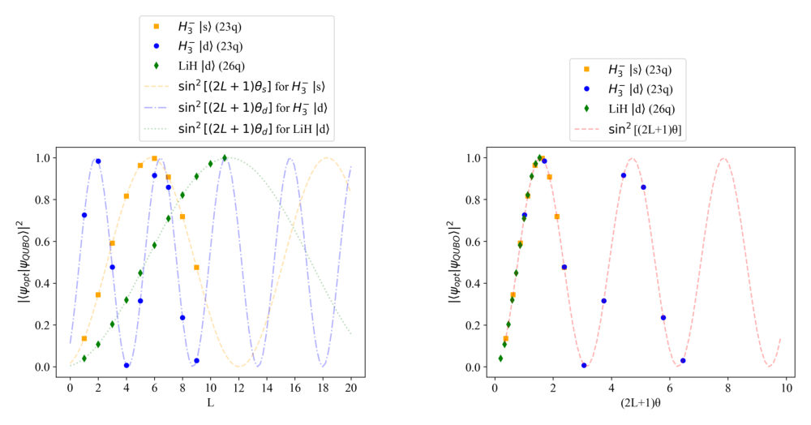
<figcaption class="paper-figure-caption"><b>Fig 4.</b> FIG. 4: GAS-SCF results for increasing number of iterations L (left) and (2L + 1)θ (right) where initial y was selected so that GAS-SCF would only amplify the ground state. The overlap between the true ground state |ψopt⟩ and the circuit statevector |ψQUBO⟩is plotted for H3 – ■(uniform input |s⟩), H3 – • (Dicke input |d⟩) and LiH ♦ (Dicke input |d⟩). Qubit counts in the legend parenthesis provide the total number of qubits including all ancilla registers. Note θ for each system is arcsin(1/ √</figcaption>
</figure>
<figure class="paper-figure-card">
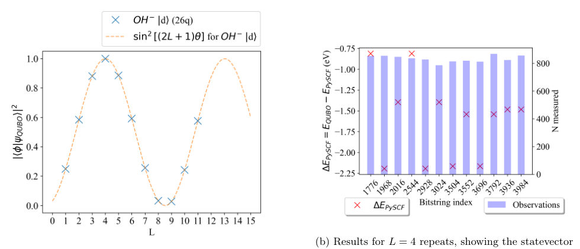
<figcaption class="paper-figure-caption"><b>Fig 5.</b> FIG. 5: GAS-SCF Dicke simulation result for OH–. The y = −780 (classical PySCF value) was used to seed the GAS-SCF routine. (a) Illustrates the overlap of the QUBO statevector with |ϕ⟩that is an equal superposition of the 12 Fock states with lower energy than the PySCF solution. (b) Results of the L = 4 statevector sampling simulation with 10, 000 shots. The x-axis gives the index of the sampled bitstring in base-10 (converting to binary gives the Fock state). The left y-axis gives the error between the GAS-SCF and PySCF RHF solution (scatter), where a negative value indicates GAS-SCF finding a better result. We see that in all cases a better bitstring over PySCF is obtained. The right...</figcaption>
</figure>
</div>
<p><strong>Summary.</strong> The paper proposes the Grover Adaptive Search Self-Consistent Field (GAS-SCF) algorithm to solve electronic structure problems by treating the SCF minimization as a QUBO optimization problem. It leverages quantum arithmetic and amplitude amplification to achieve a theoretical quadratic speedup over classical search methods. While demonstrating potential on small systems, its full utility is contingent upon fault-tolerant, large-scale quantum hardware.</p>
<p><strong>Why it may be interesting.</strong> This work directly tackles a fundamental problem in quantum chemistry—the SCF calculation—by mapping its optimization structure onto a known quantum speedup primitive (Grover's search), providing a concrete roadmap for near-term quantum simulation algorithms.</p>
<details>
<summary>Detailed structure</summary>
<p><strong>Main problem.</strong> The paper develops a quantum algorithm, GAS-SCF, to accelerate the Self-Consistent Field (SCF) calculation, which is an optimization problem in quantum chemistry.</p>
<p><strong>Main result.</strong> GAS-SCF theoretically offers a quadratic speedup for the SCF optimization by using Grover's search mechanism within a hybrid classical/quantum framework. The authors demonstrate its potential on small molecular systems, finding energy improvements over classical benchmarks.</p>
<p><strong>Method.</strong> The method combines quantum arithmetic (using QFT) to construct an oracle that marks target Fock states satisfying energy criteria, followed by amplitude amplification via Grover's algorithm. This is wrapped in a classical outer loop that iteratively updates the Molecular Orbital basis set.</p>
<p><strong>Model / system.</strong> The model is electronic structure calculation using the Hartree-Fock approximation, formulated as minimizing an expectation value over a Quadratic Unconstrained Binary Optimization (QUBO) problem defined by molecular orbital occupancies. Systems tested include H3-, LiH, and O2/O3.</p>
<p><strong>Key observables.</strong> Minimum energy expectation value ($\langle\vec{x}| H_{	ext{QUBO}} |\vec{x}
angle$), overlap between true wavefunctions and reference determinants, and the probability of measuring the optimal bitstring as a function of search repetitions ($L$).</p>
<p><strong>Important parameters / regimes.</strong> The required number of qubits scales with the size of the system (up to 330 qubits mentioned), and the complexity depends on the structure of the QUBO coefficients.</p>
<p><strong>Assumptions / limitations.</strong> Achieving chemically relevant results requires large-scale, fault-tolerant quantum hardware. The analysis relies on classical simulation of the quantum steps and assumes specific circuit constructions for arithmetic operations (e.g., QFT-based addition).</p>
<p><strong>Figures summary.</strong> Figures detail the full GAS-SCF algorithm flow, the quantum circuits for implementing necessary components like quantum addition in the Fourier basis, state marking based on energy thresholds, and reflection operators.</p>
<p><strong>Paper structure.</strong> The paper first introduces the SCF problem mapped to QUBO. It then details the GAS-SCF hybrid algorithm, showing circuit implementations for arithmetic (QFT/Fourier Basis) and constraint enforcement (particle number). Finally, it presents results comparing GAS-SCF performance against classical benchmarks on various molecules.</p>
</details>
<details>
<summary>Abstract</summary>
<p>We present the Grover adaptive search self-consistent field (GAS-SCF) algorithm. GAS-SCF leverages quantum arithmetic to construct an efficient oracle that marks target states (Fock states) which improve upon some initial classical energy estimate. Amplitude amplification then increases the probability of measuring these states. This approach offers a theoretical quadratic speed-up for the optimization problem encountered in SCF quantum chemistry and establishes a baseline against which structured optimization algorithms, such as QAOA and DQI may be compared. In this work, we classically simulate three examples as proofs of concept of the algorithm, the largest consisting of 26 qubits. We then extend our analysis to two larger systems, with O3 representing the largest case at 330 qubits. These examples are chosen to probe classically challenging SCF regimes. Achieving chemically relevant applications of GAS-SCF will require large-scale, fault-tolerant quantum hardware.</p>
</details>
<p><sub><a href="#top">↑ back to top</a></sub></p>

<p><a id="paper-2606.20385"></a></p>
<h3 id="sparse-configuration-interaction-for-the-electronic-schrodinger-equation-revisited-complete-basis-set-limit-complexity-and-quantum-encoding-impact"><a href="http://arxiv.org/abs/2606.20385v1">Sparse Configuration Interaction for the Electronic Schrödinger Equation Revisited: Complete Basis Set Limit Complexity and Quantum-Encoding Impact</a></h3>
<p><strong>Authors:</strong> Michael Griebel, Jan Hamaekers<br>
<strong>Type:</strong> theory · <strong>Category:</strong> strongly correlated electrons · <strong>PDF:</strong> <a href="https://arxiv.org/pdf/2606.20385v1">https://arxiv.org/pdf/2606.20385v1</a><br>
<strong>Analysis basis:</strong> full PDF text, analyzed in chunks</p>
<div class="figure-strip-hint">↔ Scroll figures horizontally</div>
<div class="paper-figures-scroll">
<figure class="paper-figure-card">
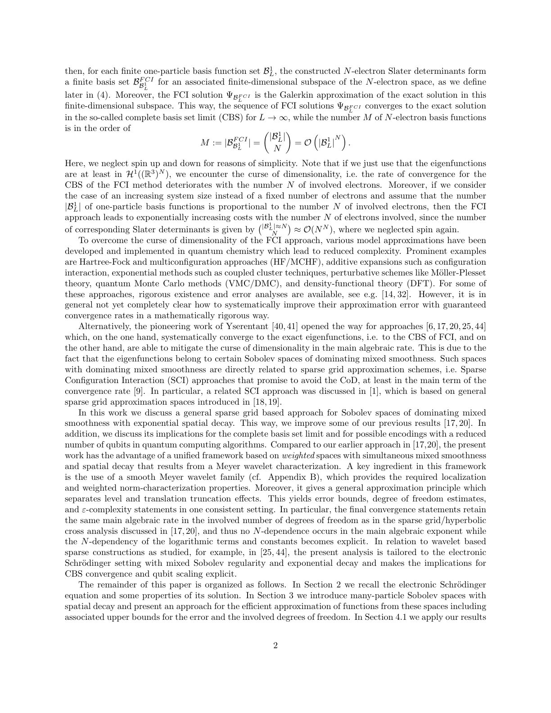
<figcaption class="paper-figure-caption"><b>Fig 1.</b> Low-resolution page preview, page 2</figcaption>
</figure>
<figure class="paper-figure-card">
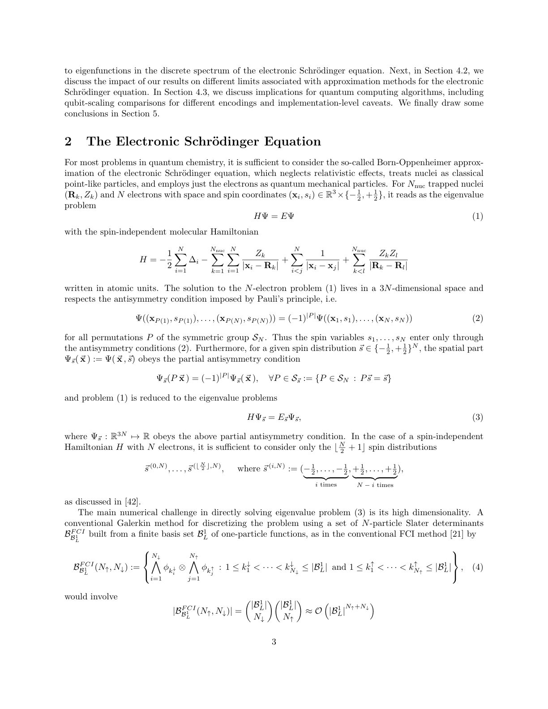
<figcaption class="paper-figure-caption"><b>Fig 2.</b> Low-resolution page preview, page 3</figcaption>
</figure>
<figure class="paper-figure-card">
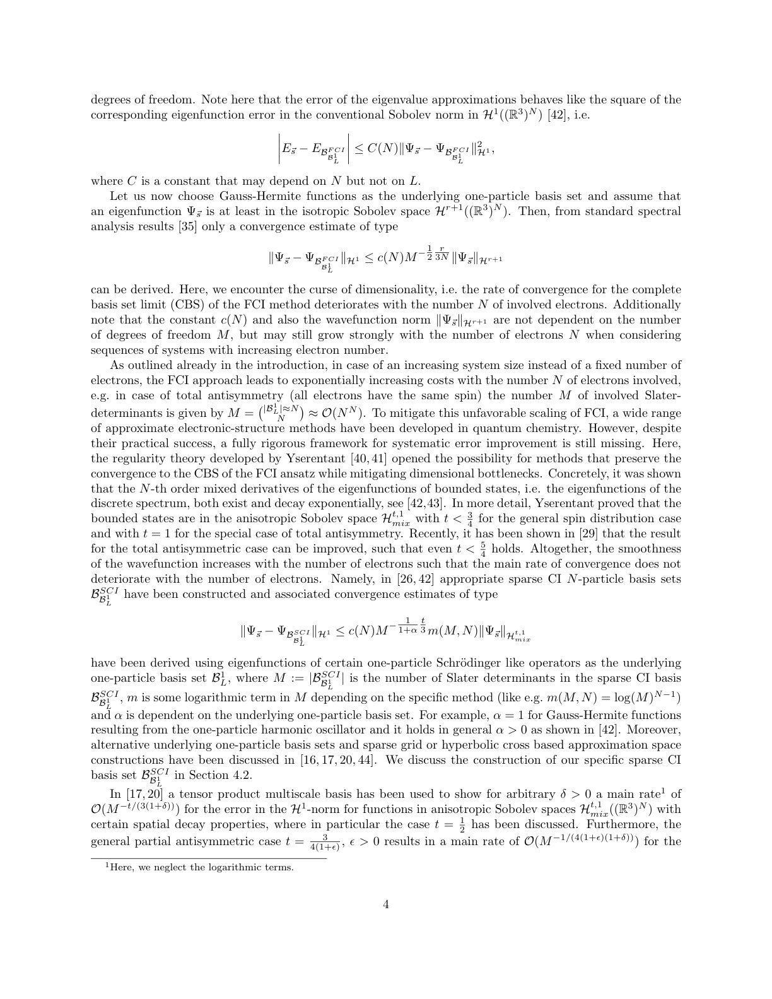
<figcaption class="paper-figure-caption"><b>Fig 3.</b> Low-resolution page preview, page 4</figcaption>
</figure>
<figure class="paper-figure-card">
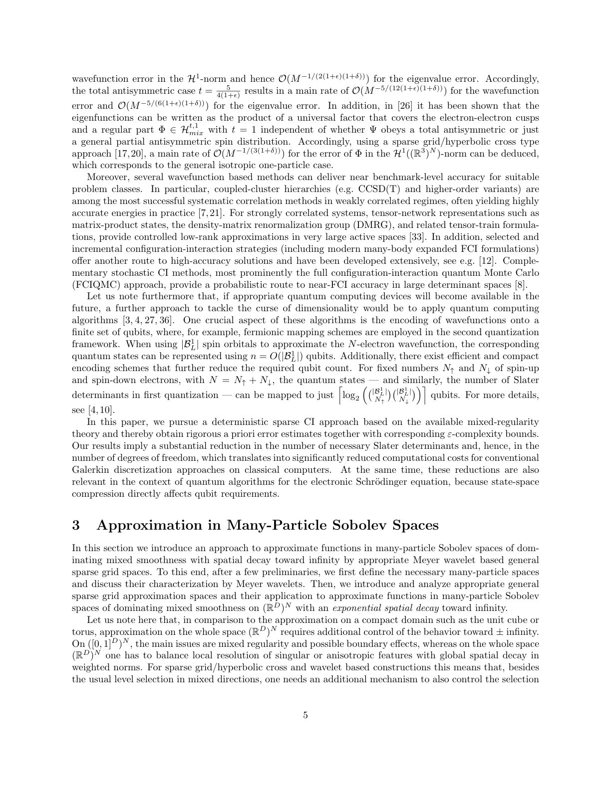
<figcaption class="paper-figure-caption"><b>Fig 4.</b> Low-resolution page preview, page 5</figcaption>
</figure>
<figure class="paper-figure-card">
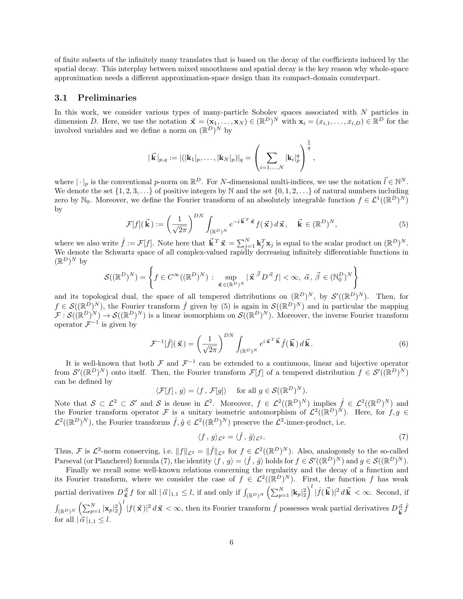
<figcaption class="paper-figure-caption"><b>Fig 5.</b> Low-resolution page preview, page 6</figcaption>
</figure>
</div>
<p><strong>Summary.</strong> The paper develops Sparse Configuration Interaction (SCI) methods to solve the electronic Schrödinger equation by rigorously analyzing function spaces using Meyer wavelets. It proves that SCI mitigates the curse of dimensionality in basis set expansions, leading to convergence rates independent of electron number $N$. This breakthrough offers a path toward simulating strongly correlated systems with drastically reduced computational scaling for both classical and quantum computing platforms.</p>
<p><strong>Why it may be interesting.</strong> This work provides a rigorous theoretical framework showing how advanced functional analysis techniques can overcome fundamental exponential scaling barriers in many-body physics simulations, directly impacting the feasibility of simulating complex chemical systems on both classical and quantum hardware.</p>
<details>
<summary>Detailed structure</summary>
<p><strong>Main problem.</strong> To develop rigorous, scalable approximation methods for solving the electronic Schrödinger equation by mitigating the curse of dimensionality inherent in full configuration interaction (FCI) expansions.</p>
<p><strong>Main result.</strong> The proposed Sparse Configuration Interaction (SCI) method achieves convergence rates to the complete basis set limit that are independent of the number of electrons ($N$), significantly reducing computational scaling compared to conventional methods.</p>
<p><strong>Method.</strong> The work combines advanced mathematical tools, including Meyer wavelet analysis on weighted Sobolev spaces defined over the $N$-particle domain, with quantum chemistry techniques like SCI and sparse grid approximations.</p>
<p><strong>Model / system.</strong> The system is governed by the electronic Schrödinger equation for interacting electrons in a molecular or atomic environment. The Hamiltonian involves electron-electron repulsion, electron-nucleus attraction, and nuclear repulsion terms.</p>
<p><strong>Key observables.</strong> Convergence rate to the Complete Basis Set (CBS) limit; approximation error ($\|\Psi_{	ext{s}} - \Psi_{	ext{BFCI}}\|_{H^1}$); required number of qubits for quantum encoding ($n_{SCI}^q$).</p>
<p><strong>Important parameters / regimes.</strong> Number of electrons ($N$); size of the one-particle basis set ($K$ or $L$); smoothness indices ($t, r$); and the degree of approximation (related to grid level $L$).</p>
<p><strong>Assumptions / limitations.</strong> The analysis relies on establishing norm equivalences using Meyer wavelets in mixed-regularity weighted Sobolev spaces; it assumes that the underlying eigenfunctions possess sufficient regularity properties.</p>
<p><strong>Figures summary.</strong> Notes reference comparisons showing SCI dramatically reduces determinant space dimensions and required qubits compared to FCI across various molecules (e.g., H2, FeMoco).</p>
<p><strong>Paper structure.</strong> The paper builds mathematically by first characterizing function spaces using Meyer wavelets on the $N$-particle domain (Chunks 3 &amp; 4), then applies these tools to derive error bounds for sparse grid approximations (Chunk 7), and finally translates these mathematical findings into computational scaling improvements for both classical solvers and quantum algorithms via SCI (Chunks 1, 2, 5, 6).</p>
</details>
<details>
<summary>Abstract</summary>
<p>In this article we revisit regularity results for eigenfunctions in the discrete spectrum of the electronic Schrödinger equation and study their consequences for approximation complexity. In particular, for the convergence to the complete basis set limit, it can be shown that the curse of dimensionality in the leading algebraic exponent can be mitigated. That is, for general sparse grid constructions, the main term of the convergence rate with respect to the number of degrees of freedom is independent of the number of electrons. These insights indicate potential benefits for classical numerical solvers of the electronic Schrödinger equation and also for quantum-computing approaches through new qubit-efficient wavefunction encodings.</p>
</details>
<p><sub><a href="#top">↑ back to top</a></sub></p>

<p><a id="paper-2606.19593"></a></p>
<h3 id="stalls-and-spequlation-pipelined-execution-for-fault-tolerant-quantum-computation"><a href="http://arxiv.org/abs/2606.19593v1">Stalls and Spequlation: Pipelined Execution for Fault Tolerant Quantum Computation</a></h3>
<p><strong>Authors:</strong> Aditi Awasthi, Gokul Subramanian Ravi, Jonathan Mark Baker<br>
<strong>Type:</strong> theory · <strong>Category:</strong> quantum information and computing · <strong>PDF:</strong> <a href="https://arxiv.org/pdf/2606.19593v1">https://arxiv.org/pdf/2606.19593v1</a><br>
<strong>Analysis basis:</strong> full PDF text, analyzed in chunks</p>
<div class="figure-strip-hint">↔ Scroll figures horizontally</div>
<div class="paper-figures-scroll">
<figure class="paper-figure-card">
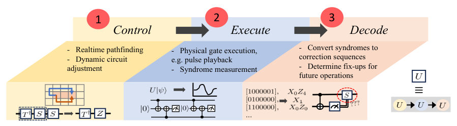
<figcaption class="paper-figure-caption"><b>Fig 1.</b> Fig. 2: Three-stage execution pipeline for a logical operation. The Control stage handles classical pre-processing, the Execute stage performs physical gate application and syndrome measurement, and the Decode stage runs classical error decoding</figcaption>
</figure>
<figure class="paper-figure-card">
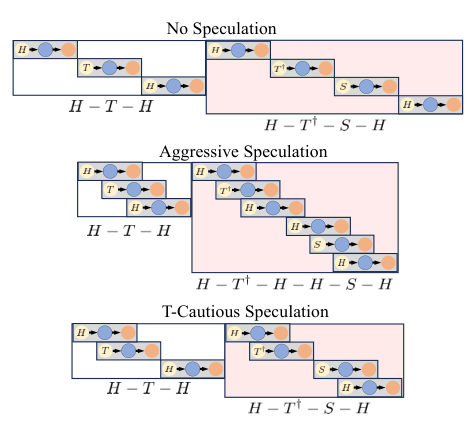
<figcaption class="paper-figure-caption"><b>Fig 2.</b> Fig. 3: Gate progression through Control (yellow), Execute (blue), and Decode (orange) stages. Left column: no injection error occurs. Right column: injection failure occurs, requiring correction. Each row shows a different scheduling strategy.</figcaption>
</figure>
<figure class="paper-figure-card">
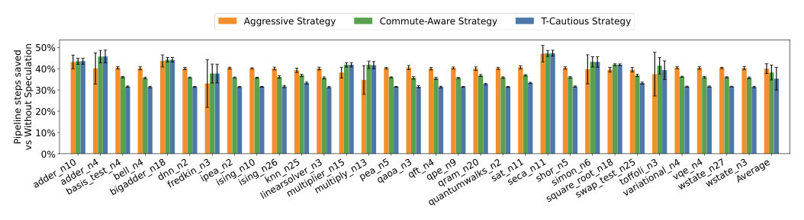
<figcaption class="paper-figure-caption"><b>Fig 3.</b> Fig. 4: Percentage savings in pipeline steps of each speculation strategy relative to the no-speculation baseline. Aggressive speculation achieves the largest savings on most benchmarks</figcaption>
</figure>
<figure class="paper-figure-card">
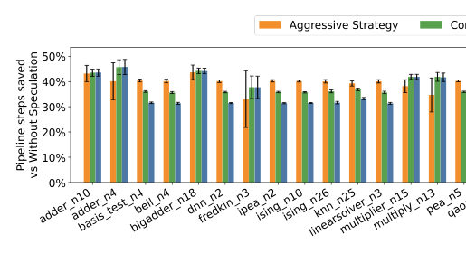
<figcaption class="paper-figure-caption"><b>Fig 4.</b> Figure 4 shows the percentage cycle savings of each strategy relative to the no-speculation baseline. Speculation consistently reduces cycle time. Every strat- egy achieves positive savings on all benchmarks; there is no circuit where speculation hurts, confirming that the pipelining benefit is robust. Aggressive speculation achieves the largest savings on almost all benchmarks. On circuits with deep T-gate depen- dency chains (ising_n26, knn_n25), it achieves ∼40% reduction in pipeline steps. One might expect the aggressive strategy to suffer due to the 50% injection failure rate. We mea- sured pnon-commute i.e. the fraction of T gate successors that do not commute with the S/S† correction...</figcaption>
</figure>
<figure class="paper-figure-card">
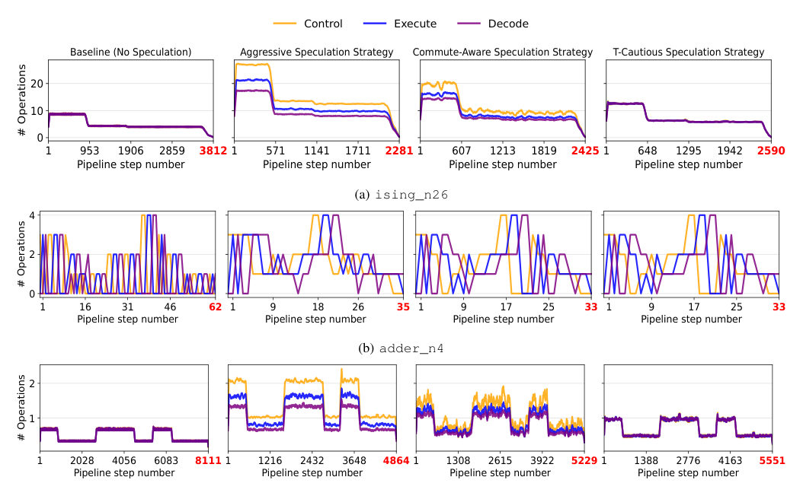
<figcaption class="paper-figure-caption"><b>Fig 5.</b> Fig. 5: Pipeline stage utilization (smoothed) for representative benchmarks under four scheduling strategies. Without speculation, utilization is bursty. With speculation, all three subsystems sustain overlapping activity</figcaption>
</figure>
</div>
<p><strong>Summary.</strong> This paper proposes a pipelined execution framework for fault-tolerant quantum computation by decomposing operations into Control, Execute, and Decode stages. By introducing speculative scheduling strategies, the authors demonstrate that overlapping these sequential steps significantly reduces overall computational time compared to treating operations as atomic units. This work provides crucial architectural insights for building practical, high-throughput quantum processors.</p>
<p><strong>Why it may be interesting.</strong> While focused on quantum computation architecture rather than AMO physics directly, the underlying concept of managing sequential dependencies across heterogeneous subsystems—especially when dealing with error correction overheads—is highly relevant to designing complex quantum control systems built from physical platforms like trapped ions or superconducting circuits.</p>
<details>
<summary>Detailed structure</summary>
<p><strong>Main problem.</strong> Current scheduling models for fault-tolerant quantum computation treat logical operations as atomic, failing to account for the sequential idle time across classical control, quantum hardware, and error decoding subsystems.</p>
<p><strong>Main result.</strong> Implementing a pipelined execution framework with speculation reduces total pipeline steps by 20-40% compared to non-speculative baselines, significantly improving throughput.</p>
<p><strong>Method.</strong> The authors decompose logical operations into sequential stages (Control $
ightarrow$ Execute $
ightarrow$ Decode) and apply speculative scheduling techniques analogous to classical pipelining.</p>
<p><strong>Model / system.</strong> The model simulates fault-tolerant quantum computation using surface codes/lattice surgery, treating the process as a three-stage pipeline. The system is analyzed by comparing different speculation strategies (Aggressive, Commute-Aware, T-Cautious).</p>
<p><strong>Key observables.</strong> Reduction in total pipeline steps (20-40% saving), stage utilization smoothing, and the performance hierarchy among scheduling strategies.</p>
<p><strong>Important parameters / regimes.</strong> The ratio of stage durations (assumed 1:1:1 for simplicity) and the frequency/cost associated with speculative rollbacks are key parameters.</p>
<p><strong>Assumptions / limitations.</strong> Key assumptions include exploiting algebraic properties (Clifford group commutation) to enable speculation, and initially assuming balanced hardware timing across stages.</p>
<p><strong>Figures summary.</strong> Figures illustrate the three-stage pipeline structure; Figure 4 quantifies percentage savings for different strategies; Figure 5 shows how speculation smooths out bursty utilization across subsystems.</p>
<p><strong>Paper structure.</strong> The paper introduces the problem of atomic operation modeling, proposes the pipelined framework (Control/Execute/Decode), details speculative scheduling mechanisms, evaluates performance against baselines using various benchmarks, and concludes by discussing load balancing benefits.</p>
</details>
<details>
<summary>Abstract</summary>
<p>Fault-tolerant quantum computation requires the coordinated action of three distinct systems: classical control logic, quantum hardware, and classical error decoders. Current scheduling models treat logical operations as atomic, hiding the fact that these subsystems operate sequentially and spend significant time idle. We present a pipelined execution framework that decomposes each logical operation into its component stages i.e. Control, Execute, and Decode. Building on this, we discuss some speculation strategies that allow successor operations to begin processing before their predecessors have completed decoding. We evaluate our framework on several common benchmarks and show that pipelining with speculation reduces total pipeline steps by 20-40% compared to a no-speculation baseline. The most aggressive strategy consistently outperforms conservative alternatives, even though partial rollback is needed at times, because the per-rollback penalty is small relative to the parallelism gained. We further show that speculation facilitates load balancing by distributing work more evenly across the heterogeneous subsystems of a fault-tolerant quantum computer, converting idle time into useful computation while also saving on execution time.</p>
</details>
<p><sub><a href="#top">↑ back to top</a></sub></p>
</details>
<h2 id="secondary-cond-mat-archives">Secondary cond-mat archives</h2>
<p><em>Papers from cond-mat.mtrl-sci, mes-hall, other, soft, supr-con. These archives are de-prioritized — they appear at the end regardless of relevance score.</em></p>
<h3 id="relevant-in-secondary-archives-16">Relevant in secondary archives (16)</h3>

<p><a id="paper-2606.19785"></a></p>
<h3 id="boltzmann-constrained-extraction-of-spin-splitting-and-momentum-relaxation-in-d-wave-altermagnets"><a href="http://arxiv.org/abs/2606.19785v1">Boltzmann-constrained extraction of spin splitting and momentum relaxation in d-wave altermagnets</a></h3>
<p><strong>Authors:</strong> Y. X. Gao, Z. W. Fan, Q. S. Yao, Y. D. Ji, H. Geng<br>
<strong>Type:</strong> theory · <strong>Category:</strong> numerical methods · <strong>PDF:</strong> <a href="https://arxiv.org/pdf/2606.19785v1">https://arxiv.org/pdf/2606.19785v1</a><br>
<strong>Analysis basis:</strong> full PDF text, analyzed in chunks
<strong>Topic relevance:</strong> 🔥 <code>methods for driven-dissipative</code> <strong>4/5</strong> · <code>driven-dissipative phase transition</code> <strong>3/5</strong> · <code>non-equilibrium dynamics</code> <strong>3/5</strong> · <code>Keldysh / 2PI / non-Gaussian methods</code> <strong>2/5</strong> · <code>analog quantum simulation</code> <strong>2/5</strong> · <code>non-equilibrium universality</code> <strong>2/5</strong> · <code>spintronics-quantum-optics interface</code> <strong>2/5</strong> · <code>Kondo &amp; dissipative impurity</code> <strong>1/5</strong> · <code>correlated / nonlocal dissipation</code> <strong>1/5</strong> · <code>exotic spin models in light-matter</code> <strong>1/5</strong></p>
<div class="figure-strip-hint">↔ Scroll figures horizontally</div>
<div class="paper-figures-scroll">
<figure class="paper-figure-card">
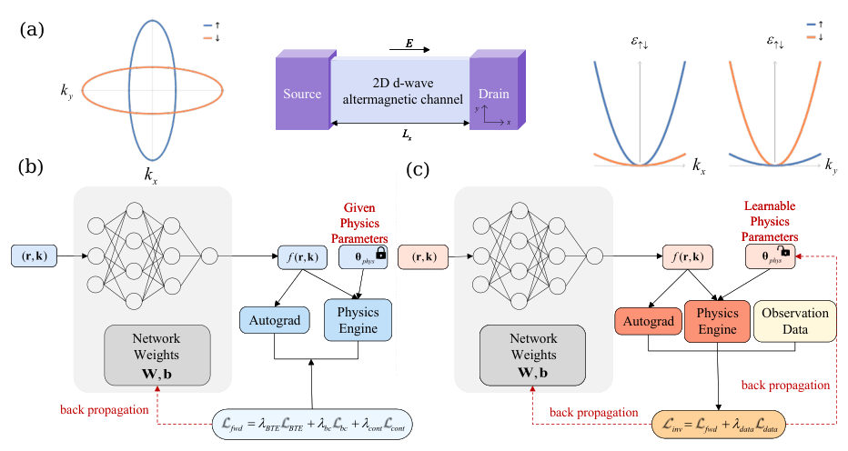
<figcaption class="paper-figure-caption"><b>Fig 1.</b> Figure 1. Boltzmann-constrained route from microscopic parameters to transport observables. (a) A two-dimensional altermag- netic channel is driven by a small source-drain bias. The spin-resolved Fermi contours and schematic spin-split band dispersions along kx and ky illustrate the minimal dispersion ε↑↓(k) = ℏ2(k2 x + k2 y)/(2m) ± α(k2 x −k2 y), with the Fermi contours shown for α = 0.4. The measured longitudinal conductance depends on both the altermagnetic coupling (α) and momentum relaxation time (τ0). (b) Forward mode: for fixed microscopic parameters, a differentiable representation of gσ(x, θ) is optimized subject to the Boltzmann equation, directional contact injection, and current...</figcaption>
</figure>
<figure class="paper-figure-card">
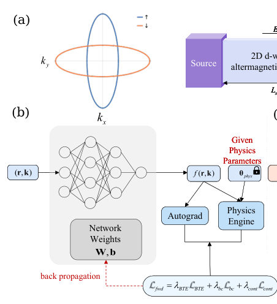
<figcaption class="paper-figure-caption"><b>Fig 2.</b> Figure 1 summarizes the route from the minimal d-wave altermagnetic channel to the differentiable forward and inverse transport problems: panel (a) connects the spin- resolved Fermi contours and spin-split band dispersions to the source–drain geometry, while panels (b) and (c) distinguish the fixed-parameter forward mode from the parameter-learning inverse mode. The integral formulation above can be solved by spa- tial and angular discretization, but the inverse problem requires the forward map {α, τ0} 7→G(EF ) to be evalu- ated and differentiated repeatedly. We therefore employ</figcaption>
</figure>
<figure class="paper-figure-card">
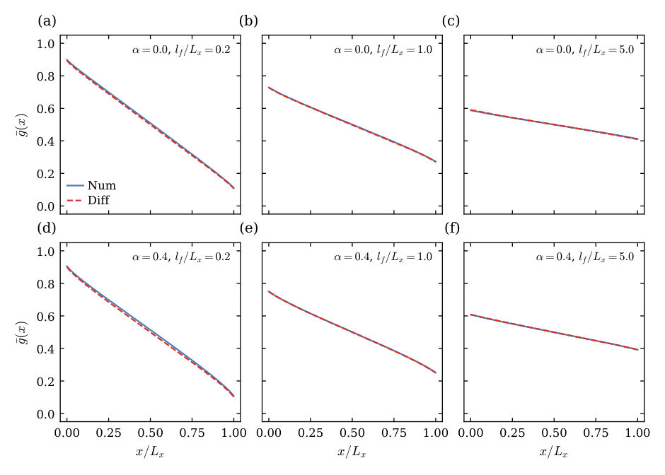
<figcaption class="paper-figure-caption"><b>Fig 3.</b> Figure 2. Local electrochemical-potential profile ¯g(x) across diffusive, crossover, and ballistic regimes. Blue solid curves are dense-discretization Boltzmann solutions and red dashed curves are differentiable-solver results. (a)–(c) Normal metal, α = 0. (d)–(f) d-wave altermagnet, α = 0.4. From left to right, lf/Lx = 0.2, 1.0, and 5.0, with EF = 1.0.</figcaption>
</figure>
<figure class="paper-figure-card">
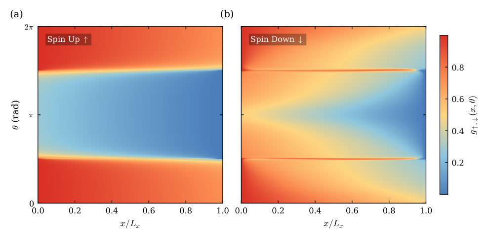
<figcaption class="paper-figure-caption"><b>Fig 4.</b> Figure 3. Spin-resolved nonequilibrium distributions in a d-wave altermagnetic channel. The heat maps show (a) g↑(x, θ) and (b) g↓(x, θ) for α = 0.4, EF = 1.0, and lf/Lx = 1.0. The contrasting textures reflect the spin-dependent longitudinal velocities produced by the altermagnetic Fermi-surface anisotropy.</figcaption>
</figure>
<figure class="paper-figure-card">
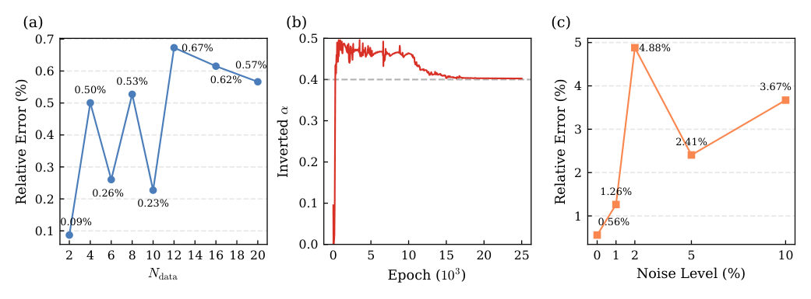
<figcaption class="paper-figure-caption"><b>Fig 5.</b> Figure 4. Single-parameter inversion of the altermagnetic coupling α with fixed τ0. (a) Relative error versus the number of conductance data points Ndata. (b) Representative optimization trajectory for Ndata = 8 and target α = 0.4. (c) Relative error under Gaussian noise in the conductance data; points are averaged over three independent runs.</figcaption>
</figure>
</div>

<p><strong>Summary.</strong> This work addresses the difficulty of separating intrinsic spin splitting from scattering effects in altermagnets by formulating an inverse transport problem. The authors developed a Physics-Informed Neural Network (PINN) acting as a differentiable Boltzmann solver to enforce strict physical constraints. This novel methodology allows for the robust, simultaneous extraction of both key material parameters ($\alpha$ and $    au_0$) from measured conductance data.</p>
<p><strong>Why it may be interesting.</strong> While focused on condensed matter transport, the core methodology—using PINNs to enforce complex physical conservation laws (like particle/current continuity) within a non-linear PDE framework for parameter identification—is highly relevant to solving open quantum system dynamics or many-body problems where exact analytical solutions are intractable.</p>
<details>
<summary>Detailed structure</summary>
<p><strong>Main problem.</strong> The primary challenge is resolving the parameter degeneracy when separating intrinsic spin splitting ($\alpha$) from extrinsic scattering ($  au_0$) in transport measurements of d-wave altermagnets.</p>
<p><strong>Main result.</strong> By employing a Physics-Informed Neural Network (PINN) constrained by local and global conservation laws, the authors successfully lift this degeneracy to accurately extract both $\alpha$ and $   au_0$.</p>
<p><strong>Method.</strong> The study uses a differentiable Boltzmann solver implemented via PINNs to solve the semiclassical transport equation in an inverse mode optimization framework.</p>
<p><strong>Model / system.</strong> The system is a two-dimensional d-wave altermagnet described by a Hamiltonian leading to spin-dependent dispersions. Transport is modeled using the semiclassical Boltzmann equation, bridging ballistic and diffusive regimes.</p>
<p><strong>Key observables.</strong> Longitudinal conductance ($G$), local electrochemical potential profile ($ar{g}(x)$), and spin-resolved non-equilibrium distributions ($g_{\uparrow/\downarrow}$).</p>
<p><strong>Important parameters / regimes.</strong> Altermagnetic coupling ($\alpha$) and momentum relaxation time ($   au_0$). The analysis spans diffusive, crossover, and ballistic transport regimes.</p>
<p><strong>Assumptions / limitations.</strong> The model assumes a semiclassical regime, linear response expansion, and that the local electrochemical potential is shared across spin channels due to non-magnetic contacts. It neglects SOC, magnetic domains, and coherent interference.</p>
<p><strong>Figures summary.</strong> Figures illustrate the successful reproduction of Boltzmann solutions across regimes (forward mode) and show how the PINN approach allows joint inversion by constraining the fit trajectory away from the compensation valley towards the true physical solution.</p>
<p><strong>Paper structure.</strong> The paper establishes the theoretical framework using the semiclassical Boltzmann equation, develops a differentiable solver via PINNs to handle forward calculations, and then applies this solver in an inverse mode optimization loop constrained by current continuity to simultaneously solve for $\alpha$ and $  au_0$.</p>
</details>
<details>
<summary>Abstract</summary>
<p>Altermagnets exhibit spin-split electronic structure without requiring spin-orbit coupling, but transport measurements generally mix intrinsic spin splitting with extrinsic scattering. We examine this identifiability problem for a two-dimensional d-wave altermagnet within a unified semiclassical framework spanning ballistic to diffusive transport. The spin-dependent Fermi-surface anisotropy produces a pronounced size effect, where vastly different longitudinal velocities cause the two spin channels to exhibit markedly different effective relaxation lengths within the same device geometry. However, the altermagnetic coupling $α$ and the momentum relaxation time $τ_0$ strongly compensate each other in longitudinal conductance, creating a severe parameter degeneracy. To lift this degeneracy, we formulate a physics-informed neural network (PINN) to act as a differentiable Boltzmann solver that strictly enforces contact injection, local particle conservation, and global current continuity. Driven by sparse conductance spectra, this neural solver leverages the Fermi-level dependence of transport to unlock the coupled parameters simultaneously, achieving sub-percent accuracy even under moderate measurement noise. These results show that combining the Fermi-level dependence of transport with strict physical constraints provides a robust route to separating spin splitting from scattering in altermagnetic conductors.</p>
</details>
<p><sub><a href="#top">↑ back to top</a></sub></p>

<p><a id="paper-2606.20026"></a></p>
<h3 id="temporal-dissipative-solitons-and-optical-frequency-combs-in-coherently-driven-kerr-resonators"><a href="http://arxiv.org/abs/2606.20026v1">Temporal dissipative solitons and optical frequency combs in coherently driven Kerr resonators</a></h3>
<p><strong>Authors:</strong> Stuart G. Murdoch, François Leo, Xiaoxiao Xue, Stéphane Coen, Miro Erkintalo<br>
<strong>Type:</strong> both · <strong>Category:</strong> other · <strong>PDF:</strong> <a href="https://arxiv.org/pdf/2606.20026v1">https://arxiv.org/pdf/2606.20026v1</a><br>
<strong>Analysis basis:</strong> full PDF text, analyzed in chunks
<strong>Topic relevance:</strong> 🔥 <code>methods for driven-dissipative</code> <strong>4/5</strong> · <code>correlated cavity matter</code> <strong>3/5</strong> · <code>driven-dissipative phase transition</code> <strong>3/5</strong> · <code>correlated / nonlocal dissipation</code> <strong>2/5</strong> · <code>non-equilibrium dynamics</code> <strong>2/5</strong> · <code>non-equilibrium universality</code> <strong>2/5</strong> · <code>Keldysh / 2PI / non-Gaussian methods</code> <strong>1/5</strong> · <code>analog quantum simulation</code> <strong>1/5</strong> · <code>interference shaping light</code> <strong>1/5</strong> · <code>superradiant laser</code> <strong>1/5</strong></p>
<div class="figure-strip-hint">↔ Scroll figures horizontally</div>
<div class="paper-figures-scroll">
<figure class="paper-figure-card">
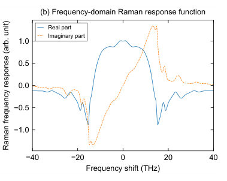
<figcaption class="paper-figure-caption"><b>Fig 1.</b> Fig. 2. (a) Temporal- and (b) frequency-domain representation of the Raman response function of fused silica (multi-vibrational mode model [109]).</figcaption>
</figure>
<figure class="paper-figure-card">
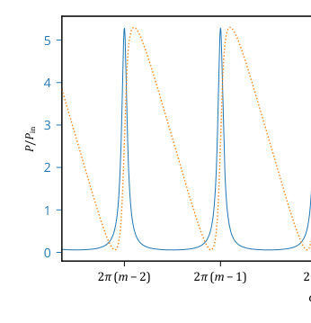
<figcaption class="paper-figure-caption"><b>Fig 2.</b> Fig. 3. Steady-state intracavity power with respect to driving power, 𝑃/𝑃in (blue, left axis), and phase response (dotted orange, right axis) of a passive resonator in the linear regime versus linear round-trip phase shift, 𝜙0. The power curve corresponds to the well known Airy distribution of linear Fabry-Perot resonators, Eq. (9), and illustrates the characteristic equidistant resonance peaks and the cavity power enhancement. The phase is that of the intracavity field 𝐸with respect to the driving field 𝐸in, as obtained from Eq. (8). Finesse set at 15, and assuming critical coupling</figcaption>
</figure>
<figure class="paper-figure-card">
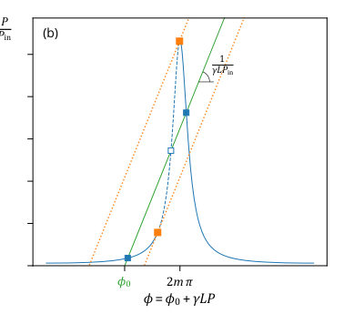
<figcaption class="paper-figure-caption"><b>Fig 3.</b> Fig. 4. In blue, steady-state response of a Kerr resonator around a resonance in the nonlinear regime versus (a) the linear round-trip phase shift 𝜙0 and (b) the total accumulated phase 𝜙= 𝜙0 + 𝛾𝐿𝑃for a driving power 𝑃in high enough to give rise to optical bistability. The green line is plotted for a particular value of 𝜙0 in the bistability region and in (b) corresponds to Eq. (18). The orange dotted lines, with the same slope as the green lines, are tangent to the blue curves at the orange points and delineate the bistability region. The blue markers show intersections between the blue resonance curves and the green lines. The dashed part of the blue curves and the open blue markers...</figcaption>
</figure>
<figure class="paper-figure-card">
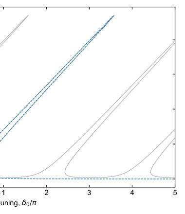
<figcaption class="paper-figure-caption"><b>Fig 4.</b> Fig. 5. Intracavity power as a function of linear cavity detuning as predicted by the Ikeda map (solid gray curve) and the mean field model (dashed blue curve). Both calculations use 𝜃= 0.1, 𝑃in = 25 W, 𝛾= 1.2 W−1 km−1, and 𝐿= 100 m. The Ikeda map calculation uses 𝛼= 0.150 whilst the mean field calculation uses 𝛼= 0.163. These different 𝛼values were chosen so as to match the peak intracavity powers across the models, which would otherwise not agree due to the comparatively low finesse (F ≈20) of the resonator considered here.</figcaption>
</figure>
<figure class="paper-figure-card">
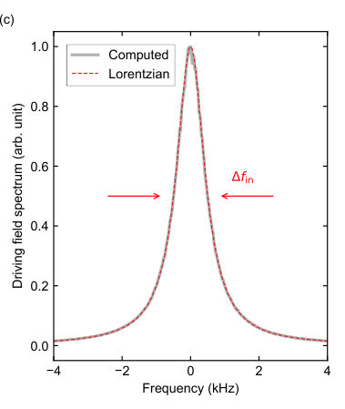
<figcaption class="paper-figure-caption"><b>Fig 5.</b> Fig. 6. Illustrative modeling of driving laser phase noise. (a) One realization of the slow time dependent phase fluctuation (Brownian motion) arising from frequency noise with constant frequency noise PSD. (b) Blue curve depicts the ensemble average of 5000 frequency noise PSD realizations, showing white noise with constant 𝑆𝑓( 𝑓) = 𝑆0 = Δ 𝑓in/(2𝜋) as highlighted by the red dashed line. (c) Gray curve shows the ensemble averaged optical spectrum arising from 5000 phase fluctuation realizations similar to that shown in panel (a). The red dashed curve shows a Lorentzian profile with FWHM Δ 𝑓in.</figcaption>
</figure>
</div>

<p><strong>Summary.</strong> This comprehensive review details the physics behind generating optical frequency combs using Kerr resonators. It explains that these combs arise from localized nonlinear dissipative structures like temporal solitons, which stabilize the system's output despite losses. The paper integrates advanced theoretical modeling with practical experimental techniques used in modern integrated photonics.</p>
<p><strong>Why it may be interesting.</strong> This work bridges nonlinear wave physics with applied quantum optics by studying dissipative, non-Hamiltonian systems. The concepts of stable attractors (solitons) in driven, lossy environments are highly relevant to open quantum system dynamics and cavity QED modeling.</p>
<details>
<summary>Detailed structure</summary>
<p><strong>Main problem.</strong> The article reviews the fundamental physics governing Kerr frequency combs generated by localized nonlinear dissipative structures within coherently driven optical resonators.</p>
<p><strong>Main result.</strong> It details how bright temporal cavity solitons (in anomalous dispersion) and nonlinear switching waves (in normal dispersion) act as canonical stable states enabling robust, coherent comb generation in microresonators.</p>
<p><strong>Method.</strong> The review synthesizes theoretical modeling using the Generalized Nonlinear Schrödinger Equation (GNLSE), coupled with discrete map approaches (Ikeda map), alongside comprehensive discussions of experimental characterization techniques.</p>
<p><strong>Model / system.</strong> The primary system is a Kerr nonlinear optical resonator, modeled by equations describing intracavity field evolution over multiple passes. Platforms range from long optical fibers to integrated monolithic microresonators (e.g., MgF2).</p>
<p><strong>Key observables.</strong> Temporal and spectral intensity profiles of the intracavity field; cavity power enhancement factor; frequency spacing (FSR); stability metrics like timing jitter.</p>
<p><strong>Important parameters / regimes.</strong> Dispersion regime (anomalous vs. normal GVD), Kerr nonlinearity ($\gamma$), resonator loss ($\alpha$), and coupling strength ($ heta$).</p>
<p><strong>Assumptions / limitations.</strong> The analysis often relies on the mean-field approximation for high-finesse cavities, assuming point coupling losses and single-mode operation.</p>
<p><strong>Figures summary.</strong> Figures illustrate linear resonance behavior (Fabry-Perot), nonlinear resonance shifts due to Kerr effects, and comparisons between predictions from the Ikeda map versus simplified mean-field models.</p>
<p><strong>Paper structure.</strong> The article is structured as a comprehensive review/tutorial, covering modeling dispersive resonators, dedicated sections for temporal cavity solitons (anomalous regime), localized structures in normal dispersion (switching waves), and experimental realization techniques.</p>
</details>
<details>
<summary>Abstract</summary>
<p>Kerr frequency combs have recently emerged as an exciting new photonic technology, with applications across science and engineering. Their formation within driven optical resonators that possess a Kerr nonlinearity is enabled through the rich landscape of localized nonlinear dissipative structures intrinsic to these systems. This article offers a comprehensive review of the physics that underpins these nonlinear comb-generating structures. Particular attention is placed on bright temporal cavity solitons and nonlinear switching waves -- the canonical stable comb-generating states in the anomalous and normal dispersion regimes, respectively. Written as both a review and tutorial, the article also includes an in-depth treatment of the numerical methods required to simulate driven Kerr resonators, alongside a comprehensive discussion of the laboratory techniques used to experimentally realize and characterize Kerr combs.</p>
</details>
<p><sub><a href="#top">↑ back to top</a></sub></p>

<p><a id="paper-2606.19973"></a></p>
<h3 id="designing-all-possible-logic-gates-in-phononic-lattices-a-theoretical-study"><a href="http://arxiv.org/abs/2606.19973v1">Designing all possible logic gates in phononic lattices: A theoretical study</a></h3>
<p><strong>Authors:</strong> Swaraj Biswas, Santanu K. Maiti<br>
<strong>Type:</strong> theory · <strong>Category:</strong> statistical mechanics · <strong>PDF:</strong> <a href="https://arxiv.org/pdf/2606.19973v1">https://arxiv.org/pdf/2606.19973v1</a><br>
<strong>Analysis basis:</strong> full PDF text, analyzed in chunks
<strong>Topic relevance:</strong> 🔥 <code>methods for driven-dissipative</code> <strong>4/5</strong> · 🔥 <code>non-equilibrium dynamics</code> <strong>4/5</strong> · <code>Keldysh / 2PI / non-Gaussian methods</code> <strong>3/5</strong> · <code>driven-dissipative phase transition</code> <strong>3/5</strong> · <code>non-equilibrium universality</code> <strong>2/5</strong> · <code>Frenkel-Kontorova</code> <strong>1/5</strong> · <code>analog quantum simulation</code> <strong>1/5</strong> · <code>correlated / nonlocal dissipation</code> <strong>1/5</strong></p>
<div class="figure-strip-hint">↔ Scroll figures horizontally</div>
<div class="paper-figures-scroll">
<figure class="paper-figure-card">
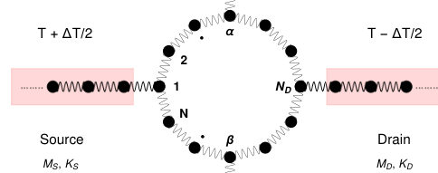
<figcaption class="paper-figure-caption"><b>Fig 1.</b> FIG. 1: (Color online). Logic gate setup, where a phononic ring is coupled to source and drain heat baths. Two masses, labeled as A and B, are placed in close proximity to the ring that act as logical inputs.</figcaption>
</figure>
<figure class="paper-figure-card">
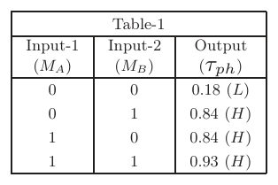
<figcaption class="paper-figure-caption"><b>Fig 2.</b> FIG. 2: (Color online). OR gate operation. (a) Junction setup, where a phononic ring is coupled to two heat baths, source and drain, respectively. Two input sites, labeled as A and B, are placed symmetrically to the ring. (b) Phonon transmission probability as a function of phonon frequency under four different input conditions, where the blue line de- notes when both inputs are OFF, the green line denotes when only one input is ON, and the orange line shows the case where both inputs are ON. Both for the (1, 0) and (0, 1) input con- ditions, identical transmission probabilities are obtained, and thus, we use one curve for them. Table-1 shows the truth table for the OR gate response at ω =...</figcaption>
</figure>
<figure class="paper-figure-card">
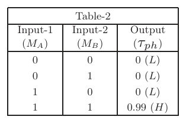
<figcaption class="paper-figure-caption"><b>Fig 3.</b> FIG. 3: (Color online). AND gate operation. (a) Junction setup, where an 8 -site ring is connected to the heat baths, source and drain, respectively. Two additional sites, A and B, are attached to the lower arm of the ring. (b) Phonon trans- mission spectrum, where different colors correspond to the same meaning as depicted in Fig. 2(b). We use single curve for (1, 0) and (0, 1) input conditions, as for both these cases, iden- tical transmission probabilities are obtained. Table-2 shows the truth table for the AND gate response at ω = 8.2 Trad/s.</figcaption>
</figure>
<figure class="paper-figure-card">
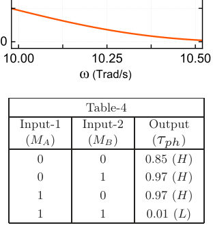
<figcaption class="paper-figure-caption"><b>Fig 4.</b> FIG. 5: (Color online). NAND gate operation. Junction setup is the same as described in Fig. 2(a). (a) Phonon transmission probability as a function of phonon frequency, where different colored curves represents the same meaning as described in Fig. 2(b). Both for the (1, 0) and (0, 1) input conditions, identical transmission probabilities are obtained, and thus, we use one curve for them. Table-4 shows the truth table for the NAND gate response at ω = 10.5 Trad/s.</figcaption>
</figure>
<figure class="paper-figure-card">
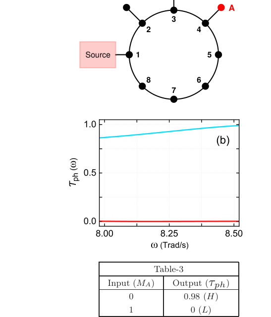
<figcaption class="paper-figure-caption"><b>Fig 5.</b> FIG. 4: (Color online). NOT gate operation. (a) Junction setup, where a ring, with two additional sites, connected with two heat baths, source and drain, respectively. Among these two additional sites, the site labeled ‘A’ serves as the input, while the other is part of the parent lattice. (b) Phonon trans- mission probability as a function of phonon frequency, where the cyan line denotes when the input is OFF, and the red line indicates the ON state of the input. The truth table for the NOT gate response at ω = 8.5 Trad/s is shown in Table-3.</figcaption>
</figure>
</div>

<p><strong>Summary.</strong> The paper theoretically designs a method to build universal logic gates using only heat flow through a nanophonic ring structure. By calculating the phonon transmission probability via NEGF, the authors demonstrate that all seven standard logic operations can be realized by controlling local atomic couplings at the input sites. This suggests a viable pathway for thermal computing devices.</p>
<p><strong>Why it may be interesting.</strong> This work bridges concepts from open quantum systems (heat baths, non-equilibrium dynamics) with information theory, proposing a solid-state platform where thermal transport dictates computation. The use of phonon modes makes it relevant to studies in nanoscale energy transfer and phononics.</p>
<details>
<summary>Detailed structure</summary>
<p><strong>Main problem.</strong> The research aims to realize all seven standard logic gates (OR, AND, NOT, etc.) using thermal energy flow rather than electrical current in nanoscale phononic lattices.</p>
<p><strong>Main result.</strong> All seven fundamental and combinatorial logic gates are successfully demonstrated theoretically by tuning the junction configuration of a phononic ring system. The proposed operations show robustness across a broad range of phonon frequencies.</p>
<p><strong>Method.</strong> The analysis employs the non-equilibrium Green's function (NEGF) formalism to calculate the phonon transmission probability ($\tau_{ph}$) through the coupled nanoring structure.</p>
<p><strong>Model / system.</strong> The physical system is a phononic ring lattice connected to two heat baths (source and drain), with two or one additional atomic site acting as controllable inputs. The junction dynamics are modeled using a mass-spring framework.</p>
<p><strong>Key observables.</strong> Phonon transmission probability ($\tau_{ph}$), where high $\tau_{ph}$ corresponds to the logical '1' state, and low $\tau_{ph}$ corresponds to the '0' state.</p>
<p><strong>Important parameters / regimes.</strong> Source/Drain temperatures ($T \pm \Delta T/2$), atomic masses ($M_A, M_B$), spring constants ($K$), and phonon frequency ($\omega$).</p>
<p><strong>Assumptions / limitations.</strong> The logic output is solely determined by the interference effects governing $\tau_{ph}$ within the NEGF framework. The '0' state input corresponds to the physical absence of an atomic site.</p>
<p><strong>Figures summary.</strong> Figures illustrate the junction setups for various gates (e.g., OR gate) and plot the calculated phonon transmission probability ($\tau_{ph}$) as a function of phonon frequency ($\omega$) under different input conditions.</p>
<p><strong>Paper structure.</strong> The paper systematically analyzes each logic gate (OR, AND, NOT, etc.) by defining the required junction configuration and calculating the corresponding $\tau_{ph}$ spectrum using NEGF theory to generate truth tables for all inputs.</p>
</details>
<details>
<summary>Abstract</summary>
<p>We propose a scheme for realizing thermal logic gates at the nanoscale using a phononic ring system. Two atomic sites, placed in close proximity to the ring, serve as the inputs for two-input logic operations, while a single proximity site is employed for single-input logic functionality. The logic output is encoded in the phonon transmission probability, which is calculated within the framework of non-equilibrium Green's function formalism. By appropriately tuning the ring-electrode junction configuration, all seven standard logic gates, comprising three fundamental and four combinatorial operations, are successfully realized in different phonon frequency regimes. Our results suggest that the proposed logic operations remain valid over a broad range of phonon frequencies, highlighting the generality and reliability of the proposed approach.</p>
</details>
<p><sub><a href="#top">↑ back to top</a></sub></p>

<p><a id="paper-2606.20378"></a></p>
<h3 id="mixed-floquet-lattice-model-for-gapless-topology"><a href="http://arxiv.org/abs/2606.20378v1">Mixed Floquet Lattice model for gapless topology</a></h3>
<p><strong>Authors:</strong> Goutham Vinjamuri, Ashutosh Dubey, Ankur Das<br>
<strong>Type:</strong> theory · <strong>Category:</strong> other · <strong>PDF:</strong> <a href="https://arxiv.org/pdf/2606.20378v1">https://arxiv.org/pdf/2606.20378v1</a><br>
<strong>Analysis basis:</strong> full PDF text, analyzed in chunks
<strong>Topic relevance:</strong> 🔥 <code>non-equilibrium dynamics</code> <strong>4/5</strong> · <code>analog quantum simulation</code> <strong>3/5</strong> · <code>driven-dissipative phase transition</code> <strong>3/5</strong> · <code>methods for driven-dissipative</code> <strong>3/5</strong> · <code>non-equilibrium universality</code> <strong>2/5</strong> · <code>Frenkel-Kontorova</code> <strong>1/5</strong> · <code>Keldysh / 2PI / non-Gaussian methods</code> <strong>1/5</strong></p>
<div class="figure-strip-hint">↔ Scroll figures horizontally</div>
<div class="paper-figures-scroll">
<figure class="paper-figure-card">
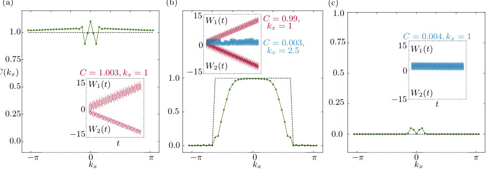
<figcaption class="paper-figure-caption"><b>Fig 1.</b> FIG. 2. Chern number C(kx) extracted from the rate of energy pumping (green line and circles), plotted together with the Chern number calculated for H(kx, θ1, θ2) over the periodic (θ1, θ2) torus using the Fukui–Hatsugai–Suzuki method [31] (black dotted line). We use the following parameters: (a) m = 0.8, tx = 0.6, and η = 5 (LCI phase), with the inset showing the work done by both drives as a function of time at kx = 1; (b) m = 1.8, tx = 0.6, and η = 1 (W2 phase), with the inset showing the work done by both drives at kx = 1 (red) and kx = 2.5 (blue); (c) m = 3, tx = 0.6, and η = 1 (trivial phase), with the inset showing the work done by both drives at kx = 1.</figcaption>
</figure>
<figure class="paper-figure-card">
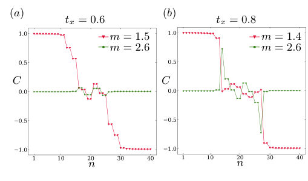
<figcaption class="paper-figure-caption"><b>Fig 2.</b> FIG. 1. Chern number C of each band plotted against the band index n, calculated by computing the slope of the net energy pumped from one drive to the other. We show four cases: (a) m = 1.5, tx = 0.6 (topological) and m = 2.6, tx = 0.6 (trivial); (b) m = 1.4, tx = 0.8 (topological) and m = 2.6, tx = 0.8 (trivial), all computed at size N = 20. In both examples, several bands below half-filling in the topological sector (m &lt; 2) exhibit quantized energy transfer with C = 1, whereas in the trivial sector (m &gt; 2), none of the bands show fully quantized energy pumping.</figcaption>
</figure>
</div>

<p><strong>Summary.</strong> The paper explores realizing a Weyl semimetal topology using a mixed Floquet lattice driven by two incommensurate fields. It finds that while the momentum-resolved energy pumping correctly detects the characteristic Chern number associated with Weyl nodes, the total real-space response follows a different dynamical pattern. This reveals a fundamental topological obstruction: continuous features like node separation are lost when reduced to simple integer invariants.</p>
<p><strong>Why it may be interesting.</strong> This work is highly relevant as it addresses the non-equilibrium dynamics of topological matter, showing that simple quantization rules derived from gapped systems fail for gapless semimetals in driven settings.</p>
<details>
<summary>Detailed structure</summary>
<p><strong>Main problem.</strong> The study investigates whether the topological information of a gapless Weyl semimetal phase, realized in a mixed Floquet synthetic dimension, is fully captured by global integer invariants derived from energy pumping.</p>
<p><strong>Main result.</strong> The continuous momentum-space information defining the Weyl node separation ($k_0$) survives only in the momentum-resolved response ($C(k_x)$), while the total real-space power transfer follows a distinct effective Rice-Mele pumping structure, proving that gapless semimetallic topology does not straightforwardly translate to all Floquet dimensions.</p>
<p><strong>Method.</strong> The analysis uses topological invariants like Chern numbers calculated via energy pumping (quantized energy transfer) and compares these quantized results against the continuous parameters defining the static Weyl phase diagram.</p>
<p><strong>Model / system.</strong> The system is a 1D lattice model driven by two incommensurate time-dependent fields, creating a mixed (1 real + 2 synthetic)-dimensional Floquet lattice designed to host a time-reversal-broken Weyl semimetal.</p>
<p><strong>Key observables.</strong> Momentum-resolved power transfer ($C(k_x)$), total real-space power transfer ($\Phi$), and the Chern number calculated via energy pumping.</p>
<p><strong>Important parameters / regimes.</strong> Incommensurate drive frequencies ($\omega_1, \omega_2$), lattice parameters ($m, t_x, t_z, t_y$), and momentum $k_x$.</p>
<p><strong>Assumptions / limitations.</strong> The analysis distinguishes between the adiabatic regime (Landau-Zener transitions) and the total response structure; it assumes that continuous topological features are lost when reduced to a single integer invariant.</p>
<p><strong>Figures summary.</strong> Figures illustrate the system setup coupling a Rice-Mele model to two oscillating fields, showing both the resulting Floquet lattice structure and plots comparing calculated Chern numbers from energy pumping versus established methods.</p>
<p><strong>Paper structure.</strong> The paper establishes the mixed Floquet Hamiltonian, analyzes the momentum-resolved energy transfer which yields quantized Chern numbers confirming Weyl topology slices, and then contrasts this with the total real-space pump response to demonstrate the topological obstruction.</p>
</details>
<details>
<summary>Abstract</summary>
<p>We investigate the realization of a time-reversal-broken Weyl semimetal in Floquet synthetic dimensions generated by two incommensurate drives, in the spirit of topological frequency conversion in driven synthetic lattices PRX 7, 041008 (2017). The system is described by a one-dimensional lattice model in a mixed $(1~\mathrm{real}+2~\mathrm{synthetic})$-dimensional setting, where the driving phases act as synthetic momenta and generate Weyl points in the mixed Floquet band structure. Using the topology associated with these band degeneracies, we analyze the energy transfer between the two drives. We find that the mixed Floquet lattice captures the Weyl-semimetal topology only in a momentum-resolved sense: for fixed real momentum $k_x$, the power transfer measures the $k_x$-resolved Chern number and detects the separation of the Weyl nodes. However, the full real-space response is qualitatively different. The total power transfer does not reproduce the static Weyl-semimetal phase diagram, but instead follows an effective Rice-Mele-type pumping structure. Thus, in contrast to fully gapped topological insulators, gapless semimetallic phases do not straightforwardly translate to Floquet synthetic dimensions. Our results reveal a distinct dynamical phase structure of driven Weyl systems and establish mixed Floquet lattices as a platform for exploring non-equilibrium gapless topology.</p>
</details>
<p><sub><a href="#top">↑ back to top</a></sub></p>

<p><a id="paper-2606.20279"></a></p>
<h3 id="spin-transport-in-a-normal-meta-altermagnetic-superconducting-nanowire-junction"><a href="http://arxiv.org/abs/2606.20279v1">Spin transport in a normal meta-altermagnetic superconducting nanowire junction</a></h3>
<p><strong>Authors:</strong> Xing-Jian Yi, Yi-Xin Dai, Yue Mao, Qing-Feng Sun<br>
<strong>Type:</strong> theory · <strong>Category:</strong> other · <strong>PDF:</strong> <a href="https://arxiv.org/pdf/2606.20279v1">https://arxiv.org/pdf/2606.20279v1</a><br>
<strong>Analysis basis:</strong> full PDF text, analyzed in chunks
<strong>Topic relevance:</strong> 🔥 <code>Keldysh / 2PI / non-Gaussian methods</code> <strong>4/5</strong> · <code>methods for driven-dissipative</code> <strong>3/5</strong> · <code>non-equilibrium dynamics</code> <strong>3/5</strong> · <code>driven-dissipative phase transition</code> <strong>2/5</strong> · <code>non-equilibrium universality</code> <strong>2/5</strong> · <code>Kondo &amp; dissipative impurity</code> <strong>1/5</strong> · <code>exotic spin models in light-matter</code> <strong>1/5</strong></p>
<div class="figure-strip-hint">↔ Scroll figures horizontally</div>
<div class="paper-figures-scroll">
<figure class="paper-figure-card">

<figcaption class="paper-figure-caption"><b>Fig 1.</b> FIG. 1. Schematic for normal metal-altermagnetic supercon- ducting nanowire junction. (a) The left is the schematic en- ergy band of normal metal. The right is the schematic energy band of altermagnet accompanied by spin splitting. The red dashed line is Fermi level. kf↑and kf↓are Fermi wave vectors for spin-up (red) and spin-down (cyan) bands, respectively. (b) The upper part is the schematic of the device, where a metal connects with a nanowire on the surface of an s-wave SC and in proximity to altermagnet. The lower part is the spin transport process. When a spin-ˆn electron is incident, it is reflected as an equal-spin hole, injecting a spin-triplet Cooper pair into the superconducting...</figcaption>
</figure>
<figure class="paper-figure-card">

<figcaption class="paper-figure-caption"><b>Fig 2.</b> FIG. 2. (a) The energy band of 1D superconducting nanowire. (b) Four reflection coefficients and total reflection coefficient versus incident electron energy E. (c, d) Equal-spin Andreev reflection coefficient The versus incident electron energy E for (c) different chemical potentials µ and (d) different altermag- net strengths tJ. Parameters: α = 0, θ = π/2, and ϕ = 0 in (a-d), tJ = 0.8∆in (a-c), µ = 80∆in (a-b), µ = 20∆in (d).</figcaption>
</figure>
<figure class="paper-figure-card">

<figcaption class="paper-figure-caption"><b>Fig 3.</b> FIG. 3. Equal-spin Andreev reflection coefficient The versus polar angle θ for different incident electron energies E. The four data points at θ = π/2 on four curves correspond to the four blue cross points in Fig. 2(c). Parameters: α = 0, tJ = 0.8∆, µ = 80∆, ϕ = 0.</figcaption>
</figure>
<figure class="paper-figure-card">

<figcaption class="paper-figure-caption"><b>Fig 4.</b> FIG. 4. (a) Spin conductance Gs,tot versus spin bias V for different chemical potentials µ. (b) Spin conductance Gs,tot versus polar angle θ for different azimuthal angles ϕ. Point at θ = π/2 on ϕ = 0 curve corresponds to blue cross point in (a). (c) Spin injection efficiency η versus polar angle θ for different azimuthal angles ϕ. Parameters: α = 0 and tJ = 0.8∆in (a-c), µ = 80∆ and V = 0 in (b-c), θ = π/2 and ϕ = 0 in (a).</figcaption>
</figure>
<figure class="paper-figure-card">

<figcaption class="paper-figure-caption"><b>Fig 5.</b> FIG. 5. Equal-spin Andreev reflection coefficient The versus incident electron energy E for (a,c) different chemical poten- tials µ and (b,d) different altermagnet strengths tJ. The inci- dent electron spin is along z axis in (a-b) and x axis in (c-d). Parameters: α = 11.2∆and ϕ = 0 in (a-d), tJ = 0.8∆in (a,c), µ = 310∆in (b,d), θ = π/2 in (c-d) and θ = 0 in (a-b).</figcaption>
</figure>
</div>

<p><strong>Summary.</strong> This paper theoretically investigates generating and controlling spin-triplet superconductivity in nanowire junctions coupled to altermagnets. By calculating Andreev reflection coefficients and spin conductance using Green's functions, the authors confirm that these systems can support robust, dissipationless spin supercurrents. The findings highlight the tunability of this transport via magnetic orientation and topological phase transitions.</p>
<p><strong>Why it may be interesting.</strong> This work connects advanced concepts in magnetism (altermagnetism) with superconductivity and spintronics, providing a theoretical blueprint for realizing exotic quantum transport phenomena like dissipationless spin currents.</p>
<details>
<summary>Detailed structure</summary>
<p><strong>Main problem.</strong> The research aims to demonstrate a pathway for achieving dissipationless spin transport by engineering spin-triplet superconductivity in hybrid nanowire junctions.</p>
<p><strong>Main result.</strong> The authors confirm the injection of spin triplet Cooper pairs via non-zero equal-spin Andreev reflection and show that spin conductance can be tuned, even exhibiting quantization in topological regimes.</p>
<p><strong>Method.</strong> The study employs the nonequilibrium Green's function method to calculate transport properties like spin current and spin conductance under applied bias.</p>
<p><strong>Model / system.</strong> The system modeled is a normal metal connected to an altermagnetic superconducting nanowire junction. The physics relies on proximity-induced spin-triplet superconductivity mediated by the altermagnet's magnetic order.</p>
<p><strong>Key observables.</strong> Equal-spin Andreev reflection coefficient (T_{eh,sigma}), total spin conductance (G_{s,tot}), and spin injection efficiency ($\eta$).</p>
<p><strong>Important parameters / regimes.</strong> Chemical potential ($\mu$), spin bias orientation, altermagnet strength ($T_j$), and the presence/absence of Spin-Orbit Coupling (SOC).</p>
<p><strong>Assumptions / limitations.</strong> The analysis assumes that the superconducting pairing mechanism is dominated by proximity effects from the altermagnetic material.</p>
<p><strong>Figures summary.</strong> Figures illustrate energy band structures, reflection coefficients vs. energy, angle dependence of conductance, and topological invariants ($\mathbb{Z}_2$) versus chemical potential to show phase transitions.</p>
<p><strong>Paper structure.</strong> The paper progresses by first establishing the theoretical framework using BdG equations, calculating key transport observables (Andreev reflection, spin current), analyzing the role of SOC and magnetic orientation, and finally demonstrating topological superconducting phases leading to quantized conductance.</p>
</details>
<details>
<summary>Abstract</summary>
<p>Spin triplet superconductors are considered a promising platform for dissipationless spin transport, where spin currents are carried by spin triplet Cooper pairs. In this paper, we propose that the spin triplet superconductivity and spin supercurrent can be engineered in an altermagnetic superconducting nanowire, where a one-dimensional nanowire is placed on the surface of an s-wave superconductor and in proximity to the altermagnet. Using the nonequilibrium Green's function method, we demonstrate a nonzero equal spin Andreev reflection coefficient at the normal metal-altermagnetic superconducting nanowire interface, thereby verifying the injection of spin triplet Cooper pairs. Furthermore, we systematically investigate the spin transport properties in this hybrid system under a spin bias. Our results demonstrate that these properties can be effectively tuned by the chemical potential and spin bias orientation. Our proposal provides a pathway toward realizing dissipationless spin transport.</p>
</details>
<p><sub><a href="#top">↑ back to top</a></sub></p>

<p><a id="paper-2606.20159"></a></p>
<h3 id="electric-field-driven-magnetic-switching-and-tightly-bound-interlayer-excitons-in-bilayer-crsbr"><a href="http://arxiv.org/abs/2606.20159v1">Electric-field-driven magnetic switching and tightly bound interlayer excitons in bilayer CrSBr</a></h3>
<p><strong>Authors:</strong> Xiubin Li, Yu Sun, Xuanji Wang, Chunyan Wang, Kenji Watanabe, Takashi Taniguchi, Sheng Liu, Ting Yu, Liang Li, Tao Zhang, Jing Li<br>
<strong>Type:</strong> experiment · <strong>Category:</strong> other · <strong>PDF:</strong> <a href="https://arxiv.org/pdf/2606.20159v1">https://arxiv.org/pdf/2606.20159v1</a><br>
<strong>Analysis basis:</strong> full PDF text, analyzed in chunks
<strong>Topic relevance:</strong> 🔥 <code>spintronics-quantum-optics interface</code> <strong>4/5</strong> · <code>exotic spin models in light-matter</code> <strong>3/5</strong> · <code>analog quantum simulation</code> <strong>2/5</strong> · <code>driven-dissipative phase transition</code> <strong>2/5</strong> · <code>correlated cavity matter</code> <strong>1/5</strong> · <code>non-equilibrium dynamics</code> <strong>1/5</strong> · <code>non-equilibrium universality</code> <strong>1/5</strong> · <code>quantum optics experiment</code> <strong>1/5</strong></p>
<div class="figure-strip-hint">↔ Scroll figures horizontally</div>
<div class="paper-figures-scroll">
<figure class="paper-figure-card">

<figcaption class="paper-figure-caption"><b>Fig 1.</b> Fig. 1. Crystal structure and magneto-PL spectra of bilayer CrSBr. a Top view of the crystal structure of bilayer CrSBr, with arrows indicating the crystallographic axes. b Schematic illustration of the dual-gated device structure, and the side view of CrSBr crystal structure. Bilayer CrSBr is encapsulated by two hBN flakes, while few-layer graphite serves as the top and bottom gates. Vt and Vb denote the top- and bottom-gate voltages, respectively. Blue and red arrows represent opposite magnetic-moment orientations. c Upper two panels: magneto-PL spectra measured under opposite magnetic-field sweeping directions along the b axis. The schematics above the panels illustrate the evolution of...</figcaption>
</figure>
<figure class="paper-figure-card">

<figcaption class="paper-figure-caption"><b>Fig 2.</b> Fig. 2. Electric-field-tunable and magnetic-order-dependent excitonic states in bilayer CrSBr. a-c Electric-field- dependent PL spectra measured at −0.3, 0, and +0.3 T, respectively. To clearly visualize Xb in the FM state (±0.3 T), the PL intensity in the high-energy region of a and c is magnified by a factor of 10. d-f PL spectra measured under different magnetic states at −0.067, 0, and +0.067 V/nm, respectively. Magenta, yellow, and royal-blue curves represent Gaussian fitting components corresponding to Xa, Xi, and Xb, respectively. In panel f, the complicated spectral profile of Xa prevents reliable Gaussian fitting.</figcaption>
</figure>
<figure class="paper-figure-card">

<figcaption class="paper-figure-caption"><b>Fig 3.</b> Fig. 3. Electric-field-driven magnetic switching in bilayer CrSBr. a-d PL spectra as a function of electric field E measured under constant magnetic fields. The E-sweeping direction is defined by the left-to-right orientation along the horizontal axis. The schematics above the PL maps illustrate the corresponding magnetic-field configurations and the electric- field-driven magnetic phase-transition processes. The PL spectra shown in the left and right panels of a and b were measured sequentially, separated by a magnetic-field adjustment process performed at fixed E. White arrows indicate the critical magnetic fields associated with magnetic phase transitions.</figcaption>
</figure>
<figure class="paper-figure-card">

<figcaption class="paper-figure-caption"><b>Fig 4.</b> Fig. 4. The mechanism of electric-field-driven magnetic switching in bilayer CrSBr. a Electric-field-dependent µ0HC for the AFM–FM transitions in Device 1. The gray curve plots the fitting results, which combines a linear ME effect and E-tuned interlayer magnetic coupling mechanism. b Comparison of contributions to µ0HC-modulation from the linear ME effect and E-tuned interlayer magnetic coupling. The gray line is the fitting curve extracted from panel a. The contributions from linear ME effect and E-tuned interlayer magnetic coupling are represented by the red and blue curves, respectively. Inset shows the fitting results in an expanded electirc field range. c Side view of the crystal...</figcaption>
</figure>
</div>

<p><strong>Summary.</strong> This work demonstrates electric field control over the magnetic switching between AFM and FM states in bilayer CrSBr. Using magneto-PL measurements, the authors characterize both the underlying excitonic physics and the magnetoelectric coupling mechanisms. The findings establish bilayer CrSBr as a highly promising platform for electrically controlled spin-optoelectronic functionalities.</p>
<p><strong>Why it may be interesting.</strong> The direct electrical control over magnetic order via excitonic signatures provides an experimental realization of multiferroic-like behavior in 2D materials, which is highly relevant for developing next-generation spintronic devices that couple charge/field to spin.</p>
<details>
<summary>Detailed structure</summary>
<p><strong>Main problem.</strong> The central goal is achieving deterministic electric field control of magnetic order and understanding the interplay between excitonic states and magnetism in 2D van der Waals magnets for low-power spin-based technologies.</p>
<p><strong>Main result.</strong> The study demonstrates reversible, electric-field-driven switching between antiferromagnetic (AFM) and ferromagnetic (FM) states in bilayer CrSBr. Furthermore, it resolves a tightly bound interlayer exciton whose behavior is coupled to the magnetic phase transition.</p>
<p><strong>Method.</strong> Magneto-Photoluminescence (PL) measurements are performed on dual-gated bilayer CrSBr samples while applying out-of-plane electric fields and sweeping magnetic fields.</p>
<p><strong>Model / system.</strong> The physical system is bilayer CrSBr encapsulated by hBN, studied in a dual-gated device structure. The analysis models the free energy difference between AFM and FM states as being governed by linear magnetoelectric effects and field-dependent interlayer exchange coupling.</p>
<p><strong>Key observables.</strong> Magnetic phase transitions (AFM $\leftrightarrow$ FM), excitonic features ($X_a$, $X_b$, $X_i$), critical magnetic fields ($\mu_0 H_C$), and the dependence of these on applied electric field ($E$).</p>
<p><strong>Important parameters / regimes.</strong> Temperature (3.7 K), Electric Field ($E \sim 0.03$ V/nm), Magnetic Field ($\mu_0 H \sim 0.3$ T).</p>
<p><strong>Assumptions / limitations.</strong> The asymmetry in switching behavior suggests involvement of localized states near the bottom layer under positive bias, and the magnetic transition is modeled by combining linear ME effects and $E$-tuned exchange coupling.</p>
<p><strong>Figures summary.</strong> Figures illustrate abrupt spectral changes during field sweeps corresponding to phase transitions; PL spectra show electric-field-induced redistribution between excitonic species ($X_a$, $X_b$); and plots quantify the sign-dependent modulation of the critical magnetic field ($\mu_0 H_C$) by the applied electric field.</p>
<p><strong>Paper structure.</strong> The paper systematically presents evidence for (1) reversible, electric-field-driven magnetic switching; (2) characterization of interlayer excitons coupled to magnetism; and finally, (3) a quantitative model explaining the observed asymmetry in the critical magnetic field dependence on $E$ by combining linear magnetoelectric terms and exchange coupling modulation.</p>
</details>
<details>
<summary>Abstract</summary>
<p>Electric field control of magnetic order in two-dimensional (2D) van der Waals magnets is a central goal for low-power spin-based technologies. In the ambient-stable antiferromagnet CrSBr, strong magnetic anisotropy and robust exciton-spin coupling provide a favorable platform, yet deterministic electric field control of its magnetic phases has not been achieved. Here we demonstrate electric-field-driven reversible switching between antiferromagnetic and ferromagnetic states in dual-gated bilayer CrSBr without intentional carrier doping. In parallel, photoluminescence measurements resolve a tightly bound interlayer exciton with an intrinsic dipole moment of only ~1 e angstrom. The electric field dependence of the magnetic phase transition reveals two coexisting mechanisms: a linear magnetoelectric effect in the antiferromagnetic state and an electric-field-modulated interlayer exchange coupling. Their interplay accounts for the asymmetric evolution of the critical magnetic field. Our results establish bilayer CrSBr as a promising 2D material for electrically controlled spin-optoelectronic functionalities.</p>
</details>
<p><sub><a href="#top">↑ back to top</a></sub></p>

<p><a id="paper-2606.20259"></a></p>
<h3 id="majorana-modes-in-helical-altermagnet-without-net-magnetism-and-spin-orbit-coupling"><a href="http://arxiv.org/abs/2606.20259v1">Majorana modes in helical altermagnet without net magnetism and spin-orbit coupling</a></h3>
<p><strong>Authors:</strong> Xing-Jian Yi, Yue Mao, Cheng-Ming Miao, Qing-Feng Sun<br>
<strong>Type:</strong> theory · <strong>Category:</strong> other · <strong>PDF:</strong> <a href="https://arxiv.org/pdf/2606.20259v1">https://arxiv.org/pdf/2606.20259v1</a><br>
<strong>Analysis basis:</strong> full PDF text, analyzed in chunks
<strong>Topic relevance:</strong> <code>Keldysh / 2PI / non-Gaussian methods</code> <strong>3/5</strong> · <code>analog quantum simulation</code> <strong>3/5</strong> · <code>spintronics-quantum-optics interface</code> <strong>3/5</strong> · <code>driven-dissipative phase transition</code> <strong>2/5</strong> · <code>methods for driven-dissipative</code> <strong>2/5</strong> · <code>Kondo &amp; dissipative impurity</code> <strong>1/5</strong> · <code>exotic spin models in light-matter</code> <strong>1/5</strong> · <code>non-equilibrium dynamics</code> <strong>1/5</strong></p>
<div class="figure-strip-hint">↔ Scroll figures horizontally</div>
<div class="paper-figures-scroll">
<figure class="paper-figure-card">

<figcaption class="paper-figure-caption"><b>Fig 1.</b> FIG. 1. (a) Schematic for altermagnet-metal-superconductor nanowire system to realize TSC, N´eel vector of 2D altermag- net rotates in xy plane versus z coordinate. (b) Altermagnetic nanowire energy band without helical structure with parame- ters µ = 1.9, θ = 0, tJ = 0.1. (c) The black dashed line is free electron energy band within rotating frame without altermag- netism. Parameters: µ = 1.9, θ = 1, tJ = 0. The blue and red lines are energy bands of helical altermagnet nanowire with tJ changed to 0.1. (d), (e), and (f) are the energy bands of the nanowire in proximity to s-wave superconductor without altermagnet and helical order (θ = 0, tJ = 0), with altermag- netism but without helical...</figcaption>
</figure>
<figure class="paper-figure-card">

<figcaption class="paper-figure-caption"><b>Fig 2.</b> FIG. 2. (a) Finite-size energy spectrum of SC-proximitized helical altermagnet nanowire versus θ. (b) Wave functions of the red lines in (a). (c) Z2 number of the bulk Hamiltonian. (d) Topological phase diagram in the tJ-θ plane, µ = 2 and 1.9 in the left and right panels. Parameters: ∆= 0.15 in (a-d), µ = 2, tJ = 0.05 in (a-c), and the nanowire length N = 200 in (a-b).</figcaption>
</figure>
<figure class="paper-figure-card">

<figcaption class="paper-figure-caption"><b>Fig 3.</b> FIG. 3. (a) Two MBSs (yellow stars) are localized at both ends of nanowire with a metal lead connected to one end. (b) Helical altermagnet nanowire with opposite chirality. Two MBSs are localized at ends and the other two are localized at domain wall. The STM can scan the whole nanowire. (c) Calculated conductance for the device in (a) versus bias V and µ with N = 200, θ = 0.4, tJ = 0.1. (d) Calculated STM conductance for the device in (b) versus bias V and site j with tJ = 0.1, µ = 2. In the inset, conductance at zero bias is plotted. The parameters N = 200, θ = 0.4 for the left nanowire and N = 200, θ = −0.4 for the right nanowire.</figcaption>
</figure>
</div>

<p><strong>Summary.</strong> The paper presents a theoretical scheme to create Majorana bound states in a nanowire placed on a helical altermagnet, circumventing the need for strong spin-orbit coupling. By tuning parameters like chemical potential and magnetic order, they predict robust signatures of topological superconductivity, including quantized conductance peaks at both ends and domain walls.</p>
<p><strong>Why it may be interesting.</strong> This work provides a concrete, material-science-inspired pathway (helical altermagnets) to engineer exotic topological states like MBSs, which are crucial for fault-tolerant quantum computation architectures.</p>
<details>
<summary>Detailed structure</summary>
<p><strong>Main problem.</strong> The research proposes a novel platform to realize topological superconductors (TSC) and Majorana bound states (MBSs) without relying on conventional spin-orbit coupling or net magnetism.</p>
<p><strong>Main result.</strong> They demonstrate that helical altermagnetism naturally induces necessary spin-momentum locking, leading to quantized conductance signatures ($2e^2/h$ at ends and $4e^2/h$ at domain walls).</p>
<p><strong>Method.</strong> The analysis uses a tight-binding lattice Hamiltonian approach, employing gauge transformations and Green's function formalism in the Nambu basis for transport calculations.</p>
<p><strong>Model / system.</strong> The system is modeled as a one-dimensional metal nanowire placed on the surface of a two-dimensional helical altermagnet, coupled proximally to an s-wave superconductor. The Hamiltonian incorporates terms related to helical order ($    heta$) and altermagnetism ($t_J$).</p>
<p><strong>Key observables.</strong> Quantized conductance peaks (Zero-Bias Conductance Peak) at $2e^2/h$ (ends) and $4e^2/h$ (domain walls); topological invariants ($Z_2$, $Z$).</p>
<p><strong>Important parameters / regimes.</strong> Chemical potential ($\mu$), altermagnet strength ($t_J$), helical frequency ($    heta$), superconducting gap ($\Delta$), and disorder strengths ($W_    heta, W_A$).</p>
<p><strong>Assumptions / limitations.</strong> The analysis relies on low-energy expansions near the $\Gamma$ point and uses advanced Green's function techniques for current calculation.</p>
<p><strong>Figures summary.</strong> Figures illustrate band inversion processes, finite-size energy spectra showing gap reopening/closing based on parameters ($   heta, t_J$), topological phase diagrams ($Z_2$ vs. $t_J-\mu$), and calculated conductance curves demonstrating robust quantized peaks against disorder.</p>
<p><strong>Paper structure.</strong> The paper progresses from deriving the effective Hamiltonian in the Nambu basis to analyzing band structures and topological invariants ($Z_2$). It then moves to quantitative transport calculations using Green's functions, culminating in showing the robustness of MBS signatures against various forms of disorder.</p>
</details>
<details>
<summary>Abstract</summary>
<p>We propose a scheme to realize topological superconductor and Majorana bound states (MBSs) in a one-dimensional metal nanowire on the surface of a helical altermagnet and in proximity to an s-wave superconductor, removing the requirement of conventional spin-orbit coupling and net magnetism. Through gauge transformation, we demonstrate that the helical frame naturally induces spin-momentum locking while the altermagnetism breaks time-reversal symmetry. The topological superconducting phase is well tuned by chemical potential, altermagnet strength, and helical frequency. Besides, our transport calculation results reveal quantized conductance signatures: a 2e2/h zero-bias peak at nanowire ends and a 4e2/h tunneling conductance at the domain wall of nanowires with opposite chirality, detected via metal lead and scanning tunneling microscopy, respectively. Our research offers new perspectives on finding MBSs.</p>
</details>
<p><sub><a href="#top">↑ back to top</a></sub></p>

<p><a id="paper-2606.20541"></a></p>
<h3 id="controllable-quantum-spin-hall-phases-in-bimath1134mathtemath1135math-family-van-der-waals-heterobilayers"><a href="http://arxiv.org/abs/2606.20541v1">Controllable Quantum Spin Hall Phases in Bi$_2$Te$_3$-Family van der Waals Heterobilayers</a></h3>
<p><strong>Authors:</strong> Emmanuel V. C. Lopes, Pedro H. Sophia, Felipe Crasto de Lima, Adalberto Fazzio<br>
<strong>Type:</strong> theory · <strong>Category:</strong> other · <strong>PDF:</strong> <a href="https://arxiv.org/pdf/2606.20541v1">https://arxiv.org/pdf/2606.20541v1</a><br>
<strong>Analysis basis:</strong> full PDF text, analyzed in chunks
<strong>Topic relevance:</strong> <code>analog quantum simulation</code> <strong>3/5</strong> · <code>exotic spin models in light-matter</code> <strong>3/5</strong> · <code>spintronics-quantum-optics interface</code> <strong>3/5</strong> · <code>driven-dissipative phase transition</code> <strong>2/5</strong> · <code>Keldysh / 2PI / non-Gaussian methods</code> <strong>1/5</strong> · <code>methods for driven-dissipative</code> <strong>1/5</strong> · <code>non-equilibrium dynamics</code> <strong>1/5</strong></p>
<div class="figure-strip-hint">↔ Scroll figures horizontally</div>
<div class="paper-figures-scroll">
<figure class="paper-figure-card">

<figcaption class="paper-figure-caption"><b>Fig 1.</b> FIG. 1. Heterostructure at the top and side views in (a), where the brown spheres represent either Bi or Sb atoms from X2Te3 QL. The contribution of pz orbitals in the band structure without and with SOC effects is shown in (b) and (d) [(c) and (e)], respectively, for the Sb2Te3/Bi2SeTe2 [Bi2Te3/Bi2SeTe2] heterostructure. The inset in (d) and (e) highlights the small band gap in X2Te3 composition. Panel (f) shows the schematic band offset relative to the vacuum level for different stoichiometric compositions of the Bi2Te3 QL family. The band offset indicates interlayer charge transfer, which enhances spin–orbit coupling and drives a transition from the trivial phase of the isolated QLs to a...</figcaption>
</figure>
<figure class="paper-figure-card">

<figcaption class="paper-figure-caption"><b>Fig 2.</b> FIG. 2. Evolution of topological edge states from Sb2Te3/Bi2SeTe2 (a) and Bi2Te3/Bi2SeTe2 (b) heterostructures under different interlayer separation distances starting from the equilibrium (∆z = 0.0 ˚A). The insets in (a-2)-(a-4) and (b-2)-(b-3) highlights the region of edge states emergence, indicating either a topological [(a-2) and (b-2)] or trivial [(a-3), (a-4) and (b-3)] behavior.</figcaption>
</figure>
<figure class="paper-figure-card">

<figcaption class="paper-figure-caption"><b>Fig 3.</b> FIG. 3. Switchable quantum spin Hall edge states under an influence external electric field applied along directions that enhance [(a-1) and (b-1)] and suppress [(a-2) and (b- 2)] the topological properties of Sb2Te3/Bi2SeTe2 (a) and Bi2Te3/Bi2SeTe2 (b) in vertical equilibrium distance. The figures (a-3) and (b-3) displays the topological phase diagram which takes into account the electric field, displacement and topology. The red map indicates the trivial regime, whereas the blue indicate the nontrivial.</figcaption>
</figure>
<figure class="paper-figure-card">

<figcaption class="paper-figure-caption"><b>Fig 4.</b> FIG. 4. Sb2Te3/Bi2SeTe2 structure (upper figures) and their corresponding edge states band structure (middle figures) and spin projection (lower figures) under different rotation angles, (a) for 0◦, (b) for 21.8◦, and (c) for 60◦.</figcaption>
</figure>
</div>

<p><strong>Summary.</strong> This theoretical study investigates how van der Waals heterostructures made from Bi2Te3 family materials can host controllable Quantum Spin Hall edge states. By combining DFT with tight-binding methods, the authors show that stacking two trivial layers can induce a topological phase due to interfacial charge transfer. Crucially, they demonstrate that this topological state can be switched on or off using external electric fields, suggesting applications in spintronics.</p>
<p><strong>Why it may be interesting.</strong> While focused on condensed matter topology, the concept of externally controlling quantum states (switching QSH phases on/off) through electric fields is highly relevant to open quantum systems and device physics.</p>
<details>
<summary>Detailed structure</summary>
<p><strong>Main problem.</strong> The research aims to develop a controllable method for creating and manipulating two-dimensional topological phases, specifically Quantum Spin Hall (QSH) phases, using van der Waals heterostructures.</p>
<p><strong>Main result.</strong> The study demonstrates that stacking two topologically trivial quintuple layers from the Bi2Te3 family can generate a QSH phase, which is further shown to be tunable by external electric fields and interlayer strain.</p>
<p><strong>Method.</strong> The work combines first-principles calculations (DFT) with Wannier-based tight-binding methods to calculate topological invariants like the Z2 invariant.</p>
<p><strong>Model / system.</strong> The physical system consists of van der Waals heterobilayers formed by stacking two quintuple layers (QLs) from the Bi2Te3 family, such as X2Te3/Bi2SeTe2. The behavior is governed by relativistic effects and interfacial hybridization.</p>
<p><strong>Key observables.</strong> Topological character confirmed by calculating the Z2 invariant; tunable edge states observed under strain or electric field; band structure inversion.</p>
<p><strong>Important parameters / regimes.</strong> Interlayer separation (Delta z), external electric field strength (E), and interlayer twist angle (e.g., 21.8 degrees).</p>
<p><strong>Assumptions / limitations.</strong> The analysis relies on an atomistic description, and the mechanism is confirmed to be independent of specific Wannier construction details.</p>
<p><strong>Figures summary.</strong> Figures illustrate the structure, band offsets showing charge transfer driving the transition from trivial to nontrivial phase, and edge state evolution under varying layer separation or electric field.</p>
<p><strong>Paper structure.</strong> The paper systematically analyzes the electronic properties by first establishing the structural basis (Table I), then demonstrating the emergence of topology via hybridization (Fig. 1), followed by mapping out the tunability landscape using external fields and strain (Fig. 2, Fig. 3).</p>
</details>
<details>
<summary>Abstract</summary>
<p>The tunability and control of topological edge/surface states are crucial for the development of new device applications. In this work, by combining first-principles calculations and Wannier-based tight-binding methods, we show the emergence of quantum spin Hall phases in van der Waals heterostructures formed by stacking two trivial quintuple layers from the Bi$_2$Te$_3$ family. We demonstrate the tunability of the edge states under interlayer strain and external electric field effects, suggesting the possibility of switching topological edge states on/off by external control. Additionally, the quantum spin Hall edge channels remain robust against interlayer twist, highlighting their stability against external perturbations. Our results provide a new way to create and manipulate two-dimensional topological phases in systems based on Bi$_2$Te$_3$ family, which can be valuable for practical applications, such as topological field effect transistors and spintronic devices.</p>
</details>
<p><sub><a href="#top">↑ back to top</a></sub></p>

<p><a id="paper-2606.20038"></a></p>
<h3 id="tunneling-induced-translation-of-intact-math1140math-radical-clusters-on-au111"><a href="http://arxiv.org/abs/2606.20038v1">Tunneling-induced translation of intact $π$-radical clusters on Au(111)</a></h3>
<p><strong>Authors:</strong> Jacob D. Teeter, Kateryna Averchenko, Maximilian Eliasch, Stefan Müllegger<br>
<strong>Type:</strong> experiment · <strong>Category:</strong> other · <strong>PDF:</strong> <a href="https://arxiv.org/pdf/2606.20038v1">https://arxiv.org/pdf/2606.20038v1</a><br>
<strong>Analysis basis:</strong> full PDF text, analyzed in chunks
<strong>Topic relevance:</strong> <code>non-equilibrium dynamics</code> <strong>3/5</strong> · <code>driven-dissipative phase transition</code> <strong>2/5</strong> · <code>non-equilibrium universality</code> <strong>2/5</strong> · <code>Frenkel-Kontorova</code> <strong>1/5</strong> · <code>methods for driven-dissipative</code> <strong>1/5</strong> · <code>quantum measurements</code> <strong>1/5</strong></p>
<div class="figure-strip-hint">↔ Scroll figures horizontally</div>
<div class="paper-figures-scroll">
<figure class="paper-figure-card">

<figcaption class="paper-figure-caption"><b>Fig 1.</b> Figure 2: Time dependence of tunnel current, I(t), after deactivating the feedback and apply- ing a tunnel voltage pulse of +2 V (see text) with the STM tip positioned over the center of a ternary cluster of BDPA on Au(111). Discrete jumps in I(t) occur at specific times labeled.</figcaption>
</figure>
<figure class="paper-figure-card">

<figcaption class="paper-figure-caption"><b>Fig 2.</b> Figure 1: (a) Single BDPA molecule adsorbed on Au(111) as seen in STM in constant-current mode (−1 V, 150 pA) with molecular structure superimposed to scale. (b) Ternary cluster of BDPA molecules on Au(111) as seen in STM in constant-current mode (−0.01 V, 500 pA). z- ranges are 0 −200 pm and scale bars are 1 nm. Acquisition temperature 6.2 K.</figcaption>
</figure>
<figure class="paper-figure-card">

<figcaption class="paper-figure-caption"><b>Fig 3.</b> Figure 3: Ternary cluster of BDPA on Au(111) as seen by STM at 6.2 K (−0.8 V, 150 pA, z- scale 0−200 pm and scale bars are 1 nm) before (left) and after (right) undergoing lateral trans- lation and rotation relative to the Au(111) sur- face induced by a voltage pulse of +2 V for 20 s with deactivated feedback (see methods) caus- ing the discrete jumps in the I(t) curve shown in Fig. 2. The + marks the tip position during voltage pulse.</figcaption>
</figure>
<figure class="paper-figure-card">

<figcaption class="paper-figure-caption"><b>Fig 4.</b> Figure 4: STM images of sequential roto- translation of a ternary cluster, wherein the cluster is displaced in the direction toward the STM tip position. The small white dot marks the center of the ternary cluster in its starting position. The white + in (a) marks the tip loca- tion during a voltage pulse performed adjacent to the ternary cluster, and the mark is included again in (b) as a guide to the eye. The white × in (b) marks the location of a second voltage pulse, and it is included again in (c) as a guide to the eye. A final pulse was performed at the location marked in (c) with a small white +, and it is included again in (d) for reference. All pulses were at +2 V for 2 s,...</figcaption>
</figure>
<figure class="paper-figure-card">

<figcaption class="paper-figure-caption"><b>Fig 5.</b> Figure 5: Sequence of STM images showing the controlled sustained and repeated dragging of ternary clusters of BDPA on Au(111) at 6.2 K (see text).</figcaption>
</figure>
</div>

<p><strong>Summary.</strong> Using low-temperature STM, the researchers demonstrated the ability to precisely manipulate intact clusters of $\pi$-radical molecules adsorbed on Au(111). By applying voltage pulses, they induced sustained translation and rotation, proving that the entire cluster moves coherently. This work opens new avenues for building artificial quantum assemblies using molecular radicals.</p>
<p><strong>Why it may be interesting.</strong> This work provides an experimental platform for studying controlled quantum dynamics and interactions of molecular assemblies on surfaces, relevant to understanding engineered quantum materials or artificial lattices.</p>
<details>
<summary>Detailed structure</summary>
<p><strong>Main problem.</strong> The research aims to demonstrate controlled, whole-cluster manipulation of intact $\pi$-radical clusters adsorbed on a metal surface.</p>
<p><strong>Main result.</strong> The authors successfully achieved sustained and repeated dragging of ternary radical clusters, enabling the construction of artificial assemblies of these molecular units.</p>
<p><strong>Method.</strong> Manipulation was performed using low-temperature Scanning Tunneling Microscopy (STM) by applying controlled voltage pulses to induce translational motion.</p>
<p><strong>Model / system.</strong> The system involves ternary clusters formed from $\alpha,\gamma$-bisdiphenylene-$eta$-phenylallyl (BDPA) molecules adsorbed on the Au(111) surface. The experiment is conducted at 6.2 K using STM.</p>
<p><strong>Key observables.</strong> Discrete jumps in tunnel current $I(t)$ corresponding to cluster translation or rotation, and the ability to construct artificial assemblies.</p>
<p><strong>Important parameters / regimes.</strong> Low temperature (6.2 K); voltage pulses ($\ge |V| \ge 2 	ext{ V}$); sustained dragging speeds ($\le 1.5 	ext{ nm/s}$).</p>
<p><strong>Assumptions / limitations.</strong> The attractive force driving translation is attributed to an electric dipole moment induced by the strong, inhomogeneous electric field near the STM tip.</p>
<p><strong>Figures summary.</strong> Figures show time-dependent current jumps during manipulation (Fig. 2), cluster rotation/translation (Fig. 3), and sequences demonstrating controlled dragging across the surface (Fig. 5).</p>
<p><strong>Paper structure.</strong> The paper details using low-temperature STM to observe that entire radical clusters move as single units when subjected to voltage pulses, providing evidence for controllable assembly building.</p>
</details>
<details>
<summary>Abstract</summary>
<p>The scanning tunneling microscope (STM) is a powerful tool for investigating and manipulating molecules on surfaces. We demonstrate with a low-temperature STM operated at 6.2 K the controlled manipulation of ternary clusters of persistent molecular $π$ radicals as a whole. The ternary clusters $-$ each self-assembled from three $α,γ$-bisdiphenylene-$β$-phenylallyl (BDPA) molecules on Au(111) $-$ maintain their natural cluster structure throughout tip-induced translation and rotation relative to the surface. Sustained and repeated dragging of radical clusters is shown to facilitate the construction of artificial assemblies of several clusters. Our results provide new opportunities for the creation and investigation of radical-based spin assemblies on surfaces.</p>
</details>
<p><sub><a href="#top">↑ back to top</a></sub></p>

<p><a id="paper-2606.19571"></a></p>
<h3 id="optical-spin-injection-in-graphane-and-fluorographene"><a href="http://arxiv.org/abs/2606.19571v1">Optical spin injection in graphane and fluorographene</a></h3>
<p><strong>Authors:</strong> Angélica Marina López-Martínez, César Castillo-Quevedo, Cesar Camas-Flores, Analila Luna-Valenzuela, Jose Luis Cabellos<br>
<strong>Type:</strong> theory · <strong>Category:</strong> other · <strong>PDF:</strong> <a href="https://arxiv.org/pdf/2606.19571v1">https://arxiv.org/pdf/2606.19571v1</a><br>
<strong>Analysis basis:</strong> full PDF text, analyzed in chunks
<strong>Topic relevance:</strong> <code>spintronics-quantum-optics interface</code> <strong>3/5</strong> · <code>Keldysh / 2PI / non-Gaussian methods</code> <strong>1/5</strong></p>
<div class="figure-strip-hint">↔ Scroll figures horizontally</div>
<div class="paper-figures-scroll">
<figure class="paper-figure-card">

<figcaption class="paper-figure-caption"><b>Fig 1.</b> FIG. 1. (Color online) The different configurations used in the calculations are displayed in two orientations (front and side views) of hydrogen/fluorine-graphene: A) chair, B) boat, C) zigzag, and D) armchair configurations. The blue-dashed lines indicate the supercells used in the calculations. Note that all unit cells are rectangular. The black spheres represent carbon atoms, while the red spheres represent hydrogen or fluorine atoms.</figcaption>
</figure>
<figure class="paper-figure-card">

<figcaption class="paper-figure-caption"><b>Fig 2.</b> FIG. 2. (Color online) The left panel shows the calculated electronic band structure, while the right panel displays the partial density of states for the fluorographene configuration (C). We set the Fermi level to 0 eV to align the bands. The shaded region corresponds to the forbidden band, and the blue arrow indicates the band gap at the Γ point of the Bril- louin zone. The band structure is plotted without a scissors correction.</figcaption>
</figure>
<figure class="paper-figure-card">

<figcaption class="paper-figure-caption"><b>Fig 3.</b> FIG. 3. (Color online) The degree of spin polarization of electrons, DSPz, which is optically injected by one-photon absorption, is presented as a function of the photon energy in graphane under different configurations: A) chair, B) boat, C) zigzag, and D) armchair configurations. The light injects electrons that exhibit spin polarization in the z direction. The band-edge values of the DSPz of injected electrons are 83%, 58%, 33%, and 0% for chair, boat, zigzag, and armchair configurations, respectively. Eg is the Kohn-Sham band gap without scissor correction.</figcaption>
</figure>
<figure class="paper-figure-card">

<figcaption class="paper-figure-caption"><b>Fig 4.</b> Figure 3(B) shows the DSPz spectrum for the graphane configuration (B). In Figure 1(B), we show the graphane configuration (B). At the onset of the DSPz, which occurs at 3.35 eV, injected electrons are 58% spin- polarized. As the photon energy is increased above 3.35</figcaption>
</figure>
<figure class="paper-figure-card">

<figcaption class="paper-figure-caption"><b>Fig 5.</b> FIG. 4. (Color online) The DSPz, which is optically injected by one-photon absorption, is presented as a function of the photon energy in fluorographene under different configurations: A) chair, B) boat, C) zigzag, and D) armchair configurations. The light injects electrons that exhibit spin polarization in the z direction. The band-edge values of the DSPz of injected electrons are 100%, 74%, 98%, and -17% for chair, boat, zigzag, and armchair configurations, respectively. Eg is the Kohn–Sham band gap without scissors correction. Figure 4(C), δE=1.32 eV, is the photo-excitation energy where DSPz differs from zero marked with the red arrow.</figcaption>
</figure>
</div>

<p><strong>Summary.</strong> The research uses DFT calculations to model optical spin injection efficiency in graphane and fluorographene structures. It determines that the fluorographene zigzag configuration offers superior spin polarization ($   ext{DSP}_z$) over a broad energy range compared to other tested geometries. This highlights how controlled functionalization of 2D carbon materials can be engineered for advanced spintronic applications.</p>
<p><strong>Why it may be interesting.</strong> This work is relevant because it models spin injection in 2D materials using first-principles methods, providing insights into how chemical functionalization ($ ext{H}$ vs $    ext{F}$) can tune electronic properties for spintronic devices, which relates to open quantum systems dynamics.</p>
<details>
<summary>Detailed structure</summary>
<p><strong>Main problem.</strong> The study theoretically investigates the optical spin-injection response in various stoichiometric configurations of graphane and fluorographene to determine which structure yields the strongest degree of spin polarization for spintronic applications.</p>
<p><strong>Main result.</strong> The fluorographene zigzag configuration was found to yield the best spin polarization ($   ext{DSP}_z$), achieving 98% polarization over a wide range of excitation energies, while other configurations showed limitations in energy bandwidth or lower polarization.</p>
<p><strong>Method.</strong> Density Functional Theory (DFT) calculations were employed using the ABINIT package to compute the optical spin-injection spectrum ($   ext{DSP}_z$) based on one-photon transition amplitudes derived from linear optical response tensors.</p>
<p><strong>Model / system.</strong> The physical systems are graphene derivatives: graphane (hydrogenated) and fluorographene (fluorinated), examined across four geometric configurations (chair, boat, zigzag, armchair). The analysis focuses on the electronic structure modifications due to $ ext{H}$ or $    ext{F}$ functionalization.</p>
<p><strong>Key observables.</strong> Degree of Spin Polarization ($ ext{DSP}_z$), spin-polarized electron density at the band edge, and the energy range over which this polarization is maintained.</p>
<p><strong>Important parameters / regimes.</strong> Spin-Orbit Coupling (SOC) strength, excitation photon energy ($\hbar\omega$), and structural distortion relative to pristine graphene.</p>
<p><strong>Assumptions / limitations.</strong> The theory relies on a one-photon transition amplitude approximation; calculations use the PBE functional within GGA and neglect non-linear core corrections or excitonic effects.</p>
<p><strong>Figures summary.</strong> Figures illustrate the geometric configurations (chair, boat, zigzag, armchair) and display the calculated $   ext{DSP}_z$ spectra as a function of photon energy for both graphane and fluorographene.</p>
<p><strong>Paper structure.</strong> The paper systematically analyzes the electronic structure and spin-polarization response ($   ext{DSP}_z$) across all four geometric motifs for both hydrogenated (graphane) and fluorinated (fluorographene) graphene, comparing results based on SOC strength and structural distortion.</p>
</details>
<details>
<summary>Abstract</summary>
<p>We theoretically investigate the optical spin-injection response in different stoichiometric configurations of graphane and fluorographene using density functional theory. Our goal is to determine which configuration yields the strongest degree of spin polarization. The results show that the fluorographene zigzag configuration yields the best degree of spin polarization response (${\cal DSP}^{\mathrm{z}}$), with 98\% spin polarized electrons at the band edge and over a wide range of excitation photon energies. In contrast, other graphane and fluorographene configurations achieve a ${\cal DSP}^{\mathrm{z}}$ of roughly 83--100\%, but only within a limited photon-excitation energy range. In structures with low spin-orbit coupling, the degree of spin polarization is close to 100\% over a wide range of photon energies. For higher spin-orbit coupling, this strong response appears, but only in a narrow photon energy region. Additionally, under the band-resolved decomposition scheme, the contributions of different band-to-band transitions to the ${\cal DSP}^{\mathrm{z}}$ spectrum are identified by summing only the selected valence and conduction bands. Our findings show that almost the entire ${\cal DSP}^{\mathrm{z}}$ spectrum of the fluorographene zigzag configuration comes from transitions that involve only the top valence band, which is a mixture of C--p and F--p states.</p>
</details>
<p><sub><a href="#top">↑ back to top</a></sub></p>

<p><a id="paper-2606.20354"></a></p>
<h3 id="determination-of-the-intrinsic-mechanical-quality-factor-in-high-stress-silicon-nitride-resonators"><a href="http://arxiv.org/abs/2606.20354v1">Determination of the intrinsic mechanical quality factor in high-stress silicon nitride resonators</a></h3>
<p><strong>Authors:</strong> Geena Benga, Vincent Dumont, Wei Wang, Nicola Cavalleri, Ariane Giesriegl, Silvan Schmid, Christian L. Degen, Antonius Armanious, Alexander Eichler<br>
<strong>Type:</strong> experiment · <strong>Category:</strong> other · <strong>PDF:</strong> <a href="https://arxiv.org/pdf/2606.20354v1">https://arxiv.org/pdf/2606.20354v1</a><br>
<strong>Analysis basis:</strong> full PDF text, analyzed in chunks
<strong>Topic relevance:</strong> <code>correlated / nonlocal dissipation</code> <strong>2/5</strong> · <code>driven-dissipative phase transition</code> <strong>2/5</strong> · <code>methods for driven-dissipative</code> <strong>2/5</strong> · <code>Keldysh / 2PI / non-Gaussian methods</code> <strong>1/5</strong> · <code>Kondo &amp; dissipative impurity</code> <strong>1/5</strong> · <code>analog quantum simulation</code> <strong>1/5</strong> · <code>entanglement &amp; information structure</code> <strong>1/5</strong> · <code>non-equilibrium dynamics</code> <strong>1/5</strong> · <code>non-equilibrium universality</code> <strong>1/5</strong></p>
<div class="figure-strip-hint">↔ Scroll figures horizontally</div>
<div class="paper-figures-scroll">
<figure class="paper-figure-card">

<figcaption class="paper-figure-caption"><b>Fig 1.</b> Figure 1. (a) To-scale illustration of a SiNx membrane device on the hinged silicon frame. The inner and outer clamping points are highlighted. (b) Simplified sketch of the optical Michelson interferometer used for measuring out-of-plane displacement. BS = beam splitter, CR = circulator, BPD = balanced photo diode. (c) Schematic illustration of a device clamped at the inner clamping point. Red shading indicates the assumed model of how stress is induced by the clamping point. (d) Schematic illustration of a device clamped at the outer clamping point. The hinge protects the membrane from induced stress.</figcaption>
</figure>
<figure class="paper-figure-card">

<figcaption class="paper-figure-caption"><b>Fig 2.</b> Figure 2. Two representative examples of modal analysis and parameter extraction. Upper row: low-stress membrane with h = 24 nm and σL = 74 MPa. Lower row: high-stress membrane with h = 23 nm and σH = 821 MPa. (a) and (b): thermomechanical displacement Power Spectral Density (PSD) as a function of frequency. Candidate peaks detected by the peak-finding algorithm and successfully matched to a theoretical mode are indicated by circles. (c) and (d): measured quality factors (Qi) plotted against the mode index (n2 + m2): the experimental results are shown as filled color circles, the theoretical model as empty gray circles, and the diluted intrinsic limit as a dashed line extracted from (e) and...</figcaption>
</figure>
<figure class="paper-figure-card">

<figcaption class="paper-figure-caption"><b>Fig 3.</b> Figure 3. Thickness dependence of the intrinsic quality factor Qintr. Pink and blue data markers correspond to high and low stress devices, respectively, and are shown with a small offset in h for better visibility. Each marker is the mean of three independent measurement under identical conditions, with error bars representing the standard deviation. Inner and outer clamping points are slightly offset in h for clarity. See legend in (a) for symbol meaning. Solid curves represent model fits to the high-stress data using (a) Eq. (4) and (b) Eq. (5), with their associated ±1σ uncertainty bands shaded in gray. Dashed lines are asymptotic limits. Gray triangles are data points from a different...</figcaption>
</figure>
</div>

<p><strong>Summary.</strong> This work presents a robust experimental methodology to measure the intrinsic mechanical quality factor ($Q_{intr}$) in silicon nitride resonators by analyzing multiple vibrational modes simultaneously. By developing and applying advanced phenomenological models, the authors successfully characterized how $Q_{intr}$ varies with film thickness, revealing previously unaccounted-for loss mechanisms crucial for designing next-generation high-performance nanodevices.</p>
<p><strong>Why it may be interesting.</strong> While focused on mechanical resonators, the rigorous separation of fundamental material loss mechanisms ($Q_{intr}$) using multi-parameter fitting techniques is analogous to characterizing dissipation channels in open quantum systems or superconducting circuits where coupling losses must be precisely quantified.</p>
<details>
<summary>Detailed structure</summary>
<p><strong>Main problem.</strong> The primary goal is to accurately determine the intrinsic mechanical quality factor ($Q_{intr}$) of silicon nitride ($  ext{SiN}_x$) resonators, separating it from extrinsic losses like acoustic radiation and clamping effects.</p>
<p><strong>Main result.</strong> A systematic dependence of $Q_{intr}$ on membrane thickness was found, requiring an advanced phenomenological model incorporating a thickness-dependent loss channel to accurately describe ultra-thin films.</p>
<p><strong>Method.</strong> The methodology combines automated mode identification from thermal noise PSD measurements with systematic ringdown analysis across multiple mechanical modes.</p>
<p><strong>Model / system.</strong> The system is high-stress, ultra-thin $ ext{SiN}_x$ membranes. The loss is modeled by separating the total inverse quality factor ($Q_i^{-1}$) into components related to radiation losses ($\alpha Q_{rad,i}$) and intrinsic material dissipation ($1/Q_{intr}$).</p>
<p><strong>Key observables.</strong> Measured quality factor ($Q_i$), intrinsic quality factor ($Q_{intr}$), resonance frequencies ($\omega_i$), and the thickness dependence of $Q_{intr}$.</p>
<p><strong>Important parameters / regimes.</strong> Membrane thickness ($h$) ranging from 20 nm to 240 nm; stress levels (low vs. high); surface roughness scale ($\delta$).</p>
<p><strong>Assumptions / limitations.</strong> The analysis assumes that the intrinsic quality factor is approximately constant over the measured frequency range, and it uses multi-mode fitting techniques to decouple loss mechanisms.</p>
<p><strong>Figures summary.</strong> Figures illustrate device setups, measurement procedures involving PSD detection and ringdown decay fitting, and plots showing how different theoretical models (e.g., simple surface vs. exponential defect layer) fit the thickness dependence of $Q_{intr}$.</p>
<p><strong>Paper structure.</strong> The paper establishes the challenge of isolating $Q_{intr}$ by detailing a multi-mode measurement technique that separates radiative losses from intrinsic ones. It then develops and applies increasingly complex phenomenological models to account for observed deviations in ultra-thin films, culminating in a comprehensive composite model.</p>
</details>
<details>
<summary>Abstract</summary>
<p>Recent advances in silicon nitride nanomechanical resonators have pushed mechanical quality factors to ultra-high values by combining stress-induced dissipation dilution with mode-shape engineering. Neither mechanism alters the intrinsic quality factor $Q_{\mathrm{intr}}$. Targeting the intrinsic loss itself therefore remains an untapped route to even higher $Q$. Doing so first requires reliable quantification of $Q_{\mathrm{intr}}$, which has proven challenging. Here we present a robust methodology that quantifies $Q_{\mathrm{intr}}$ by combining automated mode identification with systematic ringdown measurements over a large number of mechanical modes. Applied to high-stress silicon nitride membranes, it reveals a systematic dependence of $Q_{\mathrm{intr}}$ on thickness that cannot be described using established models, particularly in the ultra-thin limit. We account for this trend with a phenomenological model that incorporates a thickness-dependent loss channel. Together, our method and model open a route toward a microscopic understanding of intrinsic dissipation and toward directly mitigating its loss channels.</p>
</details>
<p><sub><a href="#top">↑ back to top</a></sub></p>
<hr>
<p>
<a href="index.html">← Index</a>
 · <a href="papers_05.html">← Previous</a> · <a href="papers_07.html">Next →</a>
</p>
<hr>

</body>
</html>
